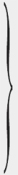

***
1. Metanın İki Unsuru: Kullanım Değeri ve Değer (Değerin Özü, Büyüklüğü)
Kapitalist üretim tarzının egemen olduğu toplumların zenginliği, "muazzam bir meta yığını"[1] olarak görünür; bunun basit biçimi tek bir metadır. Bu nedenle, incelememiz, metanın analiziyle başlıyor.
Meta, her şeyden önce, taşıdığı özelliklerle şu ya da bu türden insan ihtiyaçlarını gideren dışsal bir nesne, bir şeydir. Bu ihtiyaçların doğası, söz gelişi, mideden mi yoksa hayallerden mi kaynaklandıkları, hiçbir değişikliğe yol açmaz.[2] Burada, şeyin, insan ihtiyacını, doğrudan doğruya geçim aracı, yani tatmin nesnesi olarak mı, yoksa dolaylı bir yoldan, yani üretim aracı olarak mı giderdiği de önemli değildir.
Demir, kâğıt vb. gibi her yararlı şey, iki açıdan, niteliğine ve niceliğine göre ele alınabilir. Yararlı olan her şey, pek çok özelliğin bir bütünüdür ve bundan dolayı çeşitli bakımlardan yararlı olabilir. Şeylerin farklı yönlerini ve dolayısıyla çok sayıdaki kullanım biçimlerini ortaya çıkarmak tarihin işidir.[3] Yararlı şeylerin niceliği için toplumsal ölçülerin bulunması da böyledir. Meta ölçülerinin çeşitliliği, kısmen ölçülecek nesnelerin farklı doğalarından, kısmen de alışkanlıklardan kaynaklanır.
Bir şeyin yararlılığı, onu kullanım değeri haline getirir.[4] Ne var ki, bu yararlılık, havada duran bir şey değildir. Meta cisminin özellikleriyle belirlendiğinden, o olmadan var olamaz. Demir, buğday, elmas vb. gibi bir meta cisminin kendisi, bu nedenle bir kullanım değeri ya da malıdır. Onun bu özelliği, kendisindeki kullanım özelliklerinin elde edilmesinin insanlar açısından az mı yoksa çok mu emeğe mal olduğuna bağlı değildir. Kullanım değerleri ele alınırken, her zaman, bunların şu kadar düzine saat, şu kadar metre keten bezi, şu kadar ton kömür vb. gibi belli nicelikleri kastedilir. Metaların kullanım değerleri, bir başka disiplinin, meta bilgisinin malzemesini sağlar.[5] Kullanım değeri, kendisini yalnızca kullanımla ya da tüketimle gerçekleştirir. Kullanım değerleri, toplumsal biçimi ne olursa olsun, servetin maddi içeriğini oluşturur. Ele alacağımız toplum biçiminde, aynı zamanda, mübadele değerinin maddi taşıyıcılarını oluştururlar.
Mübadele değeri, ilk bakışta, bir nicel ilişki, bir türdeki kullanım değerlerinin bir başka türdeki kullanım değerleriyle mübadele oranı[6], zamana ve yere göre sürekli değişen bir ilişki olarak görünür. Bu yüzden, mübadele değeri, tesadüfi ve tümüyle göreli bir şey gibi, metanın özünde yer alan, onda içkin bir mübadele değeri (valeur intrinsèque) gibi, yani bir contradictio in adjecto (terimlerdeki çelişki)[7] gibi görünür. Konuyu daha yakından ele alalım.
Belli bir meta, söz gelişi bir quarter buğday, x kadar kundura boyası veya y kadar ipek ya da z kadar altın vb. ile, kısacası başka metalarla en farklı oranlarla mübadele edilmektedir. Yani, buğdayın bir değil, çok sayıda mübadele değeri vardır. Fakat, hem x kadar kundura boyası, hem y kadar ipek, hem de z kadar altın vb., bir quarter buğdayın mübadele değeri olduğundan, x kadar kundura boyası, y kadar ipek, z kadar altın vb., birbirlerinin yerini alabilen ya da birbirlerine eşit büyüklükte mübadele değerleri olmak zorundadır. Buradan çıkan ilk sonuç şudur: Aynı metanın geçerli mübadele değerleri, eşit bir şeyi ifade eder. Ama ikincisi: Mübadele değeri, ancak, kendisinden ayırt edilebilecek bir içeriğin ifade tarzı, "görünüm biçimi" olabilir.
Örneğin buğday ve demir gibi iki metayı alalım. Bunlar arasındaki mübadele oranı ne olursa olsun, bu oran, her zaman, belli bir miktarda buğdayı belli bir miktarda demire eşitleyen bir denklemle gösterilebilir; söz gelişi, 1 quarter buğday = a ton demir. Bu denklemin anlamı nedir? Bunun anlamı, iki farklı şeyde, hem 1 quarter buğdayda hem de a ton demirde, aynı büyüklükteki ortak bir şeyin olduğudur. Demek ki, bu iki şey, kendisi bu iki şeyden ne biri ne diğeri olan, bir üçüncü şeye eşittir. Mübadele değerleri oldukları ölçüde, her ikisi de, bu üçüncüsüne indirgenebilir olmak zorundadır.
Bunu geometriden alınan basit bir örnekle gösterebiliriz. Çokgenlerin alanlarını belirlemek ve karşılaştırmak için, bunlar üçgenlere ayrılır. Üçgenin kendisi, görünür şeklinden bambaşka bir ifadeye indirgenir: tabanı ile yüksekliğinin çarpımının yarısı. Bunun gibi, metaların mübadele değerlerinin de, şu ya da bu miktarını temsil ettikleri bir ortak şeye indirgenmesi gerekir.
Bu ortak şey, metaların geometrik, fiziksel, kimyasal ya da başka bir doğal özelliği olamaz. Metaların cisimsel özellikleri, ancak, onları yararlı kıldıkları, yani kullanım değerleri haline getirdikleri ölçüde inceleme konusu haline gelir. Ama öte yandan, metaların mübadele ilişkisini açık şekilde karakterize eden şey, tam da onların kullanım değerlerinden soyutlanmışlıktır. Bir mübadele ilişkisinde, bir kullanım değeri, yeterli miktarda bulunmak koşuluyla, tüm diğer metalarla aynı değerdedir. Ya da yaşlı Barbon'un dediği gibi:
"Mübadele değerleri aynı büyüklükteyse, bir meta türü diğeri kadar iyidir. Mübadele değerleri eşit büyüklükte olan şeyler arasında hiçbir farklılık ya da ayırt edilebilirlik bulunmaz."[8]
Metalar, kullanım değerleri olarak, her şeyden önce, farklı niteliklere sahiptir; mübadele değerleri olarak ise, yalnızca farklı niceliklerde olabilirler, yani bir zerre bile kullanım değeri içermezler.
Meta cisminin kullanım değeri bir yana bırakılırsa, geriye metaların yalnızca bir tek özelliği, emek ürünleri olmaları kalır. Ama emek ürünü bile elimizde dönüşüme uğramış bulunur. Emek ürününü kendi kullanım değerinden soyutladığımızda, onu, meta cismini kullanım değeri yapan maddi unsur ve biçimlerden de soyutlamış oluruz. Emek ürünü artık masa ya da ev ya da iplik ya da başka bir yararlı şey değildir. Tüm duyusal özellikleri yok olmuştur. O artık marangoz emeğinin ya da yapıcılık emeğinin ya da eğirmecilik emeğinin ya da herhangi bir başka üretici emeğin ürünü de değildir. Emek ürünlerinin yararlı olma özellikleriyle birlikte, emeklerin bunlar aracılığıyla ortaya konan yararlı olma özellikleri de yok olur; dolayısıyla, bu emeklerin farklı somut biçimleri de yok olur; bunlar artık birbirlerinden ayırt edilmez olur; hepsi eşit insan emeğine, soyut insan emeğine indirgenir.
Şimdi emek ürünlerinden arta kalan şeyi ele alalım. Bunlardan arta kalan şey, aynı hayalî nesnellikten, farksız insan emeklerinin donmuş birikiminden, yani hangi biçimlerde harcanmış olursa olsun, harcanmış insan emek gücünden başka bir şey değildir. Bu şeyler, artık yalnızca, üretimleri sırasında insan emek gücünün harcanmış olduğunu, kendilerinde insan emeğinin birikmiş bulunduğunu gösterir. Bunlar, hepsinde ortak olan bu toplumsal özün kristalleri olarak, değerlerdir (meta değerleridir).
Metaların mübadele ilişkisinde, onların mübadele değerleri, kullanım değerlerinden tamamen bağımsız bir şey olarak görünmüştü. Ama emek ürünleri kullanım değerlerinden gerçekten soyutlandığında, biraz önce belirtildiği şekilde, bunların değerlerini elde ederiz. Metaların mübadele ilişkisinde ya da mübadele değerlerinde kendini gösteren ortak şey, demek ki, bunların değeridir. İncelememiz ilerledikçe, değerin zorunlu ifade tarzı ya da görünüm biçimi olarak mübadele değerine döneceğiz; bununla beraber, şimdilik, değeri, bu görünüm biçiminden bağımsız olarak gözden geçirmemiz gerekiyor.
Demek ki, bir kullanım değeri ya da mal, yalnızca, onda soyut insan emeğinin nesnelleşmiş ya da cisimleşmiş olması nedeniyle bir değere sahiptir. Öyleyse onun değerinin büyüklüğü nasıl ölçülür? Onun içerdiği "değer yaratıcı öz"ün, yani emeğin miktarıyla. Emeğin niceliği, süresi ile ölçülür ve emek-zamanın ölçeği de, saat, gün vb. gibi belli zaman birimleridir.
Bir metanın değeri, onun üretimi sırasında harcanmış emek miktarı ile belirlendiğine göre, bir kimse ne kadar tembel ya da beceriksizse, ürettiği metanın, bu metanın yapımı o kadar fazla zaman alacağı için, o kadar değerli olacağı sanılabilir. Oysa, değerlerin özünü oluşturan emek, eşit insan emeğidir, aynı insan emek gücü harcamasıdır. Metalar dünyasının değerlerinde nesnelleşmiş bulunan toplumun toplam emek gücü, sayısız bireysel emek güçlerinden oluşmakla birlikte, burada, bir ve aynı insan emek gücü sayılır. Bu bireysel emek güçlerinden her biri, bir toplumsal ortalama emek gücü niteliğini taşıdıkları ve toplumsal ortalama emek gücü olarak etkili oldukları, yani bir metanın üretiminde yalnızca ortalama olarak gerekli ya da toplumsal olarak gerekli emek-zamana ihtiyaç duydukları ölçüde, tüm diğerleri gibi, aynı insan emek gücüdür. Toplumsal olarak gerekli emek-zaman, herhangi bir kullanım değerini, toplumun o sıradaki normal üretim koşulları altında, ortalama toplumsal hüner derecesi ve emek yoğunluğuyla elde edebilmek için gerekli olan emek-zamandır. Örneğin, İngiltere'de buharlı dokuma tezgâhlarının kullanılmaya başlamasından sonra, belli bir miktarda ipliği kumaş haline getirmek için, eskiden gerekenin belki yarısı kadar emek yeterli hale gelmişti. İngiliz el dokumacısı, aslında, aynı miktarda kumaş elde etmek için, bu yenilikten sonra da, geçmiştekiyle aynı emek-zamana ihtiyaç duyuyordu; ancak, onun bir saatlik bireysel emeği artık yalnızca yarım saatlik toplumsal emeği temsil ediyor ve bundan dolayı da değeri eskisinin yarısına düşüyordu.
Demek ki, bir kullanım değerinin değer büyüklüğünü belirleyen şey, toplumsal olarak gerekli emek miktarı ya da bunun üretilmesi için toplumsal olarak gerekli olan emek-zamandır.[9] Tek bir meta burada yalnızca kendi türünün ortalama bir örneği sayılır.[10] Eşit büyüklükte emek miktarları içeren ya da aynı çalışma süresi içinde üretilebilen metalar, bundan dolayı, aynı değer büyüklüğüne sahiptir. Bir metanın değerinin, diğer herhangi bir metanın değerine oranı, birinin üretimi için gerekli olan emek-zamanın, diğerinin üretimi için gerekli olan emek-zamana oranı gibidir. "Bütün metalar, değerler olarak, yalnızca, belirli miktarlardaki donmuş emek-zamandır."[11]
Bundan dolayı, bir metanın üretimi için gerekli olan emek-zaman değişmez olsaydı, onun değer büyüklüğü de değişmeden kalırdı. Ama emeğin üretkenliğindeki her değişmeyle, gerekli emek-zaman da değişir. Emeğin üretkenliği çok farklı koşullar tarafından belirlenir; bunlar arasında, işçinin ortalama hüner derecesi, bilimin gelişme düzeyi ve teknolojik kullanılabilirliği, üretim sürecinin toplumsal bileşimi, üretim araçlarının kapsam ve etkinliği ve doğal koşullar da bulunur. Aynı miktarda emek, söz gelişi, uygun bir mevsimde 8 bushel buğdayda maddeleşirken, uygun olmayan bir mevsimde ancak 4 bushel buğdayda maddeleşir. Aynı miktarda emek, zengin bir madende, yoksul bir madende olduğundan daha fazla maden cevheri çıkarır vb. Elmas toprağın üst katlarında az bulunur ve bu yüzden bulunup çıkarılması, ortalama olarak, fazla emek-zamana mal olur. Bunun için, az miktarda elmasta çok emek yatar. Jacob, acaba altın tam değerini hiç elde etmiş midir, diye şüpheye düşer. Bu şüphe elmas için daha da geçerlidir. Eschwege'ye göre, 1823 yılına kadar seksen yıl boyunca Brezilya elmas ocaklarından elde edilen toplam elmas ürünü, çok daha fazla emeği ve dolayısıyla değeri temsil ettiği halde, Brezilya'nın 1½ yıllık ortalama şeker ya da kahve ürününün fiyatına ulaşmamıştı. Daha zengin elmas ocaklarında aynı miktarda emek daha fazla elmasta temsil edilir ve elmasın değeri düşerdi. Kömürü az emekle elmasa çevirmenin yolu bulunabilse, elmasın değeri tuğlanın değerinin altına düşebilir. Genel olarak: Emeğin üretkenliği ne kadar büyük olursa, bir nesnenin yapımı için gereken emek-zaman o kadar küçük, o nesnede kristalleşen emek kütlesi o kadar küçük ve o nesnenin değeri o kadar küçük olur. Buna karşılık, emeğin üretkenliği ne kadar küçük olursa, bir nesnenin yapımı için gereken emek-zaman o kadar büyük ve nesnenin değeri o kadar büyük olur. Yani, bir metanın değer büyüklüğü, o metada gerçekleşen emeğin miktarıyla doğru orantılı, üretkenliğiyle ters orantılı olarak değişir.
Bir şey, değer olmadan da kullanım değeri olabilir. Şeyin insana sağladığı yarar, emek harcamasını gerektirmiyorsa böyle bir durum söz konusudur. Hava, el sürülmemiş topraklar, doğal çayırlar, kendi kendine yetişen ağaçlar vb. için durum budur. Bir şey, meta olmadan da yararlı ve insan emeğinin ürünü olabilir. Ürünüyle kendi ihtiyacını karşılayan bir kimse, kullanım değeri yaratmış, ama meta yaratmamış olur. Meta üretmek için, o kimsenin, yalnızca kullanım değeri değil, başkaları için kullanım değeri, toplumsal kullanım değeri üretmesi gerekir. [Ve sırf başkaları için üretmesi de yetmez. Orta Çağın köylüsü, feodal bey için haraç-tahıl, papaz için öşür-tahıl üretirdi. Ama, haraç-tahıl da öşür-tahıl da, başkaları için üretildikleri için meta olmuyordu. Meta olabilmek için, ürünün, kullanım değeri olarak hizmet edeceği başkasına, mübadele yoluyla aktarılması zorunludur.][12] Son olarak, hiçbir şey, bir kullanım nesnesi olmadan değer olamaz. Bir şey yararsızsa, onun içerdiği emek de yararsızdır; bu emek, emek sayılmaz ve dolayısıyla değer oluşturmaz.
2. Metalarda Cisimleşmiş Emeğin İki Yönlü Niteliği
Başlangıçta, meta bize iki yüzü, kullanım değeri ve değişim değeri olan bir şey gibi görünmüştü. Daha sonra görüldü ki, emek de, değer olarak ifade edildiği ölçüde, kullanım değerlerinin yaratıcısı olarak taşıdığı özelliklere sahip olmaktan uzaklaşır. Metaların içerdiği emeğin bu iki yönlü doğasını eleştirel olarak ilk ortaya koyan bendim.[13] Ekonomi politiği anlamanın çıkış noktasını oluşturduğundan, bu noktayı biraz daha aydınlığa kavuşturmak gerekiyor.
İki meta alalım; bunlar, 1 ceket ve 10 yarda keten bezi olsun. İlki diğerinin iki katı değerde olsun; yani, 10 yarda keten bezi = W ise, ceket = 2W.
Ceket belli bir ihtiyacı karşılayan bir kullanım değeridir. Onu elde etmek için, belli türden bir üretici faaliyet gereklidir. Bu faaliyeti belirleyen, amacı, işleyiş tarzı, nesnesi, araçları ve sonucudur. Yararlılığı bu şekilde ürünün kullanım değeriyle temsil edilen ya da ürünün bir kullanım değeri olmasıyla görünen emeğe, kısaca, yararlı emek diyoruz. Bu açıdan bakılınca emek, her zaman, yararlı etkisi ile ele alınır.
Ceket ve keten bezi nasıl nitelikçe birbirinden farklı kullanım değerleri ise, bunları var eden emekler de nitelikçe birbirinden farklıdır: terzilik ve dokumacılık. Bu şeyler nitelikçe farklı kullanım değerleri ve dolayısıyla nitelikçe farklı yararlı emeklerin ürünleri olmasaydı, birbirlerinin karşısına metalar olarak çıkamazlardı. Ceket, ceketle mübadele edilemez, bir kullanım değeri kendisinin aynı olan bir başka kullanım değeriyle mübadele edilemez.
Farklı türden kullanım değerlerinin ya da meta cisimlerinin bütünlüğü, cinsleri, türleri, aileleri, alt türleri, çeşitleri açısından aynı ölçüde farklı olan yararlı emeklerin bütünlüğünü, yani toplumsal bir iş bölümünü yansıtır. İş bölümü, meta üretiminin var olma koşuludur; buna karşılık, bunun tersi doğru değildir; yani, meta üretimi, toplumsal iş bölümünün var olma koşulu değildir. Eski Hint topluluklarında, iş, toplumsal olarak bölünmüştü; ama, ürünler meta haline gelmezdi. Ya da, daha yakınımızdan bir örnek almak gerekirse, her fabrikada iş, bir sisteme göre bölünmüştür; ama, bu bölünme, işçilerin bireysel ürünlerini mübadele konusu yapmaları sonucu olmamıştır. Yalnızca, kendi hesabına çalışan ve birbirlerinden bağımsız olan kişisel emeklerin ürünleri, birbirlerinin karşısına metalar olarak çıkar.
Dolayısıyla şunları görmüş olduk: her metanın kullanım değerinde, belli bir amaçlı üretici faaliyet ya da yararlı emek saklıdır. Nitelikçe farklı yararlı emekler barındırmayan kullanım değerleri, birbirlerinin karşısına metalar olarak çıkamaz. Ürünleri genel olarak meta biçimini alan bir toplumda, yani meta üreticilerinden oluşan bir toplumda, kendi başlarına hareket eden üreticilerin özel iktisadi faaliyetleri olarak birbirlerinden bağımsız şekilde kullanılan yararlı emeklerin bu nitel farklılığı, çok dallı bir sistem, bir toplumsal iş bölümü oluşturacak biçimde gelişir.
Bu arada ceket açısından, terzi tarafından mı yoksa terzinin müşterisi tarafından mı giyildiği önemsizdir. Her iki durumda kullanım değeri olarak iş görür. Terziliğin özel bir meslek, toplumsal iş bölümünün bağımsız bir unsuru haline gelmesi de, ceketle onu üreten emek arasındaki ilişkinin kendisinde bir değişiklik yapmaz. Herhangi bir insanın terzi olmasından önce, insanoğlu, giyinme ihtiyacının onu zorladığı yerlerde binlerce yıl boyunca terzilik yapmıştır. Ancak maddi servetin doğrudan doğruya doğadan gelmeyen bütün diğer unsurları gibi, ceket ve keten bezinin var olmaları için, her zaman, doğanın verdiği belli maddeleri yine belli insan ihtiyaçlarını karşılayacak hale sokan, özel, amaca uygun üretici faaliyet zorunlu olmuştu. Bundan dolayı, kullanım değerlerinin yaratıcısı, yararlı emek olarak emek, insanın bütün toplum biçimlerinden bağımsız bir varoluş koşulu, insan ile doğa arasındaki madde alışverişini ve dolayısıyla insan hayatını mümkün kılan ezelî ve ebedî bir doğal zorunluluktur.
Ceketin, keten bezinin vb. kullanım değerleri, kısaca meta cisimleri, iki unsurun, madde ile emeğin bileşimleridir. Cekette, keten bezinde vb. saklı bulunan bütün farklı yararlı emeklerin toplamı çıkarılırsa, geriye, insanın hiçbir etkisi olmadan, doğa tarafından sağlanan bir maddi öz kalır. İnsan, üretim sırasında, ancak doğanın kendisi gibi hareket edebilir, yani maddelerin yalnızca biçimlerini değiştirebilir.[14] Dahası var. Bu biçimlendirme işinde sürekli olarak doğa güçleri tarafından desteklenir. Demek ki, emek, kendisi tarafından üretilen kullanım değerlerinin, yani maddi servetin biricik kaynağı değildir. William Petty'nin dediği gibi, emek onun babası ve toprak onun anasıdır.
Şimdi, buraya kadar bir kullanım nesnesi olarak gördüğümüz metadan, meta değerine geçelim.
Varsayımımıza göre, ceket, keten bezinin iki katı değere sahiptir. Ne var ki, bu, şu aşamada bizi henüz ilgilendirmeyen, yalnızca nicel bir farktır. Hemen anlaşılacağı gibi, bir ceketin değeri, 10 yarda keten bezinin değerinin iki katı olunca, 20 yarda keten bezinin değeri bir ceketin değeri kadar olur. Ceket ve keten bezi, değerler olarak, aynı öze sahip şeyler, aynı tür emeğin nesnel ifadeleridir. Ne var ki, terzilik ve dokumacılık nitel olarak birbirinden farklı işlerdir. Bununla beraber, öyle toplumsal durumlar vardır ki, bu durumlarda aynı insan, farklı biçimlerde çalışarak, hem terzilik, hem dokumacılık yapar; bu nedenle, bu iki farklı çalışma biçimi aynı bireyin çalışmasının sadece iki değişik hali olur ve farklı bireylerin sıkı sıkıya belirlenmiş özel görevleri haline gelmemişlerdir; tıpkı terzimizin bugün yaptığı ceketle yarın yapacağı pantolonun aynı bireyin farklı biçimlerde çalışmasını gerektirmesi örneğinde olduğu gibi. Ayrıca, bir bakışta görülebileceği üzere, bizim kapitalist toplumumuzda, insan emeğinin belirli bir oranı, emek talebinin yönündeki değişmelere göre, dönüşümlü olarak, terzilik emeği ya da dokumacılık emeği biçiminde arz edilir. Emeğin bu biçim değişikliği pürüzsüz olarak gerçekleşemeyebilir, ama gerçekleşmek zorundadır. Aldığı özel biçimi ve dolayısıyla emeğin yararlı niteliğini bir yana bırakırsak, üretici faaliyet, bir insan emek gücü harcamasından ibaret hale gelir. Nitel olarak farklı üretici faaliyetler olmakla beraber, terzilik ve dokumacılığın her ikisi de insan beyninin, kaslarının, sinirlerinin, elinin vb., üretici şekilde harcanmasıdır ve bu anlamda her ikisi de insan emeğidir. Bunlar, insan emek gücünü harcamanın sadece iki farklı biçimidir. Kuşkusuz, şu ya da bu biçimde harcanabilmek için, insan emek gücünün kendisinin az çok gelişmiş olması zorunludur. Ne var ki, metanın değeri, basit insan emeğini, genel olarak insan emeğinin harcanmasını temsil eder. Burjuva toplumunda nasıl bir general ya da bankacı büyük, buna karşılık basit insan pek sıradan roller üstleniyorsa,[15] burada da insan emeği için aynısı söz konusudur. İnsan emeği, ortalamada, özel bir gelişkinliğe sahip olmayan her sıradan insanın canlı organizmasında bulunan basit emek gücünün harcanmasıdır. Basit ortalama emeğin kendisi, farklı ülkelerde ve farklı uygarlık çağlarında nitelik değiştirse bile, belli bir toplumda veridir. Karmaşık emek, sadece, yoğunlaştırılmış ya da daha doğrusu çoğaltılmış basit emek demektir; karmaşık emeğin daha küçük bir miktarı, basit emeğin daha büyük bir miktarına eşit olur. Deneyimler, bu indirgemenin sürekli olarak gerçekleştiğini göstermektedir. Bir meta, en karmaşık emeğin ürünü olabilir. Ne var ki, onun değeri, bu metayı basit emeğin ürününe eşitler ve dolayısıyla basit emeğin belli bir miktarını temsil eder.[16] Farklı emek türlerini, ölçü birimleri olarak basit emeğe indirgeyen farklı oranlar, üreticilerden bağımsız bir toplumsal süreçle belirlenir ve bu yüzden, onlara, geleneksel olarak belirlenmiş gibi görünür. İşimizi basitleştirmek için, bundan sonra her türden emek gücünü doğrudan doğruya basit emek gücü sayacağız ve böyle yaparak yalnızca indirgeme zahmetinden kurtulmuş olacağız.
Demek ki, nasıl ceket ve keten bezinin değerleri üzerinde dururken bunları kullanım değerlerinin farklarından soyutluyorsak, bu değerlerde saklı bulunan emekleri ele alırken de, onları, yararlı biçimlerinden, terzilikten ve dokumacılıktan soyutluyoruz. Nasıl kullanım değerleri olarak ceket ve keten bezi, belli amaçlara yönelmiş üretici faaliyetlerin kumaş ve iplikle birleşmesinden doğuyorsa, ama buna karşılık, ceket ve keten bezi değer olarak nasıl aynı türden donmuş emek kütlelerinden başka bir şey değilse, bunun gibi, bu değerlerin içerdiği emekler de, kumaş ve iplikle üretici ilişkileri açısından değil, sırf insan emek gücü harcaması olarak ele alınır. Terzilik ve dokumacılık, tam da farklı niteliklerinden ötürü, kullanım değerleri olarak ceket ve keten bezinin yaratıcı unsurlarıdır; buna karşın, yalnızca, özel niteliklerinden soyutlandıkları ve her ikisi de aynı niteliğe, insan emeği niteliğine sahip olduğu ölçüde, ceket değerinin ve keten bezi değerinin özünü oluştururlar.
Bununla beraber, ceket ve keten bezi, yalnızca genel olarak değerler olmayıp, belli büyüklükte değerlerdir; varsayımımıza göre ceket 10 yarda keten bezinin iki katı kadar değere sahiptir. Değer büyüklüklerindeki bu fark nereden gelir? Bu fark, keten bezinin, ceketin içerdiğinin ancak yarısı kadar emek içermesinden ve dolayısıyla ikincinin üretimi sırasında, birincinin üretimine harcanan emek gücünün iki katı kadar emek gücü harcanmış olmasından kaynaklanır.
O halde, kullanım değeri açısından bakıldığı zaman metada saklı emek sadece nitelik bakımından ele alınıyorsa, değerin büyüklüğü açısından bakıldığı zaman, başka hiçbir niteliğe bakılmaksızın insan emeğine indirgenmiş olarak, yalnızca nicelik bakımından ele alınır. Birinde emeğin nasıl ve ne olduğu, diğerinde emeğin ne kadar olduğu, hangi süre boyunca harcandığı söz konusudur. Bir metanın değer büyüklüğü yalnızca onun içerdiği emek miktarını gösterdiğinden, belli oranlardaki metalar her zaman eşit büyüklükte değerler olmak zorundadır.
Diyelim bir ceketin üretimi için gereken tüm yararlı emeklerin üretkenliği değişmeden kalırsa, ceketlerin değer büyüklüğü, bunların nicelikleriyle birlikte artar. 1 ceket x iş gününü temsil ediyorsa, 2 ceket 2x iş gününü temsil eder vb. Ama diyelim ki, bir ceketin üretimi için gereken emek iki katına çıksın ya da yarısına düşsün. Her iki durumda da bir ceketin yine aynı hizmeti görmesine ve içerdiği yararlı emeğin aynı özellikleri taşımasına karşın, birinci durumda bir ceket eskiden iki ceketin sahip bulunduğu kadar, ikinci durumda iki ceket yalnızca eskiden bir ceketin sahip bulunduğu kadar değere sahip olur. Ama üretimleri sırasında harcanan emek miktarı değişmiş bulunmaktadır.
Daha büyük miktarda kullanım değeri, her durumda, daha fazla maddi servet oluşturur; iki ceket, bir ceketten daha fazla maddi servet oluşturur. İki ceketle iki kişi, bir ceketle bir kişi giydirilebilir vb. Buna karşın, maddi servetin kütlesindeki artışa, bunun değer büyüklüğünün eş zamanlı bir düşüşü karşılık gelebilir. Bu çelişkili hareket emeğin ikili karakterinden kaynaklanır. Üretkenlik, doğal olarak, her zaman, yararlı, somut emeğin üretkenliğidir ve gerçekte, yalnızca, belli bir amaca yönelmiş üretici faaliyetin belli bir zaman aralığındaki etkinlik derecesini belirler. Bu nedenle, yararlı emek, kendi üretkenliğindeki artma ya da azalma ile doğru orantılı olarak, daha zengin ya da yoksul bir ürün kaynağı olur. Buna karşılık, üretkenlikteki bir değişme, değerde cisimleşen emeği hiçbir şekilde değiştirmez. Üretkenlik, emeğin somut yararlı biçimine ait olduğundan, emeğin somut yararlı biçiminden soyutlanır soyutlanmaz, doğal olarak, artık, emek üzerinde herhangi bir etkide bulunamaz. Bundan dolayı, üretkenlik nasıl değişirse değişsin, aynı emek, aynı zaman aralıklarında her zaman aynı değer büyüklüğünü yaratır. Ama aynı zaman aralığında farklı miktarlarda kullanım değerleri sağlar; üretkenlik yükselirse bu miktar büyür, düşerse küçülür. Yani, emeğin verimliliğini ve dolayısıyla onun tarafından sağlanan kullanım değerlerinin kütlesini artıran aynı üretkenlik değişimi, diğer yandan, eğer üretim için gerekli olan emek-zamanı kısaltıyorsa, artmış olan bu toplam kütlenin değer büyüklüğünü azaltır. Bunun tersi de doğrudur.
Her tür emek, bir taraftan, fizyolojik anlamda insan emek gücü harcamasıdır ve bu farksız insan emeği ya da soyut insan emeği olma özelliğiyle meta değerini yaratır.[17] Her tür emek, diğer taraftan, insan emek gücünün belli bir amaca yönelmiş özel bir biçimde harcanmasıdır ve bu somut yararlı emek olma özelliğiyle de kullanım değerleri üretir.
3. Değer Biçimi veya Mübadele Değeri
Metalar, kullanım değerleri ya da demir, keten bezi, buğday vb. gibi meta cisimleri biçiminde dünyaya gelir. Bu onların basit fiziksel biçimidir. Buna karşın yalnızca iki yönlü oldukları, aynı anda hem kullanım nesneleri hem de değer taşıyıcıları oldukları için metadırlar. Bu yüzden, bunlar ancak ikili biçimde, yani fiziksel biçimde ve değer biçiminde oldukları sürece meta olarak görünürler ya da meta biçimine sahip bulunurlar.
Metaların değer nesnelliğini (Wertgegenständlichkeit) Mistress Quickly'den ayıran, nerede elde edileceğinin bilinmemesidir. Meta cisminin duyusal kaba nesnelliğinin tam karşıtı olarak, onun değer nesnelliğine tek bir doğal madde zerresi bile girmez. Bundan dolayı, tek bir metayı dilediğimiz gibi evirip çevirebilir olsak bile, bir değer cismi (Wertding) olarak meta, anlaşılmazlığını korur. Buna karşın, metaların, yalnızca, aynı toplumsal birimin, yani insan emeğinin ifadeleri oldukları ölçüde değer nesnelliğine sahip olduklarını, dolayısıyla da değer nesnelliklerinin tümüyle toplumsal olduğunu hatırlarsak, değer nesnelliğinin kendisini yalnızca meta ile meta arasındaki toplumsal ilişkide gösterebileceği de kendiliğinden anlaşılır. Gerçekten, arkalarında saklı bulunan değerin izini yakalayabilmek için, metaların mübadele değerlerinden ya da mübadele oranlarından hareket etmiştik. Şimdi değerin bu görünüm biçimine dönmemiz gerekiyor.
Herkes, başka hiçbir şey bilmese bile, şunu bilir: metalar, kullanım değerlerinin farklı fiziksel biçimleriyle çarpıcı bir karşıtlık içinde bulunan, ortak bir değer biçimine sahiptir: para biçimi. Şimdi, bugüne kadar burjuva iktisadı tarafından el sürülmeden bırakılmış bir işe girişeceğiz; yani, bu para biçiminin doğuşunu gösterecek ve dolayısıyla, metaların değer ilişkilerinin içerdiği değer ifadesinin gelişimini, en basit ve en fark edilmez biçiminden itibaren, göz alıcı para biçimine gelinceye kadar izleyeceğiz. Böylece, aynı zamanda, para bilmecesi de çözülecek.
En basit değer ilişkisi, hiç kuşkusuz, bir metayla, hangisi olursa olsun, farklı türdeki tek bir başka meta arasındaki ilişkidir. Bu yüzden, iki metanın değerleri arasındaki ilişki bize bir metanın en basit değer ifadesini verir.
A. Basit, tek başına veya rastlantısal değer biçimi
x kadar A metası = y kadar B metası, veya: x kadar A metası, y kadar B metası değerindedir.
(20 yarda keten bezi = 1 ceket, veya: 20 yarda keten bezi, 1 ceket değerindedir.)
1) Değer ifadesinin iki kutbu: Göreli değer biçimi ve eş değer biçimi
Değer biçiminin bütün sırrı, bu basit değer biçiminde saklıdır. Bu yüzden bunun analizinin özel bir güçlüğü vardır.
Burada, farklı türlerdeki A ve B metalarının, örneğimizde keten bezi ve ceketin, iki farklı rol oynadıkları açıkça görülür. Keten bezi, değerini ceketle ifade eder; ceket, bu değer ifadesinin malzemesi olarak hizmet görür. Birinci meta aktif, ikincisi pasif bir rol oynar. İlk metanın değeri, göreli değer olarak ifade edilir ya da göreli değer biçiminde bulunur. İkinci meta, eş değer olarak işlev görür ya da eş değer biçiminde bulunur.
Göreli değer biçimi ile eş değer biçimi, aynı değer ifadesinin, birbirlerine sıkı sıkıya bağlı, karşılıklı olarak birbirini gerektiren, ayrılmaz unsurları, ama aynı zamanda da birbirlerini dışlayan ya da birbirlerine karşıt uçları, yani kutuplarıdır; bunlar her zaman, değer ifadesinin aralarında ilişki kurduğu farklı metalara bölünür. Örneğin, keten bezinin değerini keten bezi ile ifade edemem. 20 yarda keten bezi = 20 yarda keten bezi, bir değer ifadesi değildir. Daha doğrusu, bu denklem, tersine, 20 metre keten bezinin 20 metre keten bezinden, kullanım nesnesi olan keten bezinin belli bir miktarından başka bir şey olmadığını söyler. Dolayısıyla, keten bezinin değeri yalnızca göreli olarak, yani bir başka metayla ifade edilebilir. Bundan dolayı, keten bezinin göreli değer biçimi, diğer herhangi bir metanın kendi karşısında eş değer biçiminde bulunmasını gerektirir. Diğer yandan, eş değer kılığında görünen bu diğer meta, aynı zamanda göreli değer biçiminde bulunamaz. Bu meta kendi değerini ifade etmez. Bu meta yalnızca diğer metanın değer ifadesinin malzemesini sağlar.
Kuşkusuz, 20 yarda keten bezi = l ceket, veya 20 yarda keten bezi, 1 ceket değerindedir ifadesi, bunun karşıtını da kapsar: 1 ceket = 20 yarda keten bezi, veya 1 ceket, 20 yarda keten bezi değerindedir. Ama bu durumda, ceketin değerini göreli olarak ifade etmek için, denklemi tersine çevirmem gerekir; ve bunu yapar yapmaz, ceket yerine keten bezi, eş değer halini alır. Demek ki, aynı meta aynı değer ifadesinde aynı zamanda her iki biçimde görünemez. Tersine, karşıt kutuplar olarak bunlar birbirlerini dışlar.
Bir metanın göreli değer biçiminde mi, yoksa karşı taraftaki eş değer biçiminde mi bulunduğu, tümüyle, bu metanın değer ifadesinde her seferinde aldığı yere, yani, onun değeri ifade edilen meta mı, yoksa kendisiyle değer ifade edilen meta mı olduğuna bağlıdır.
2) Göreli değer biçimi
a. Göreli değer biçiminin içeriği
Bir metanın basit değer ifadesinin iki meta arasındaki değer ilişkisinde nasıl saklı bulunduğunu ortaya çıkarmak için, ilk önce, bu değer ilişkisinin, kendi nicel yönünden tamamen bağımsız olarak gözden geçirilmesi gerekir. Çoğu zaman tam tersi yapılır ve değer ilişkisinde, yalnızca, iki ayrı meta türünün belli miktarlarını birbirine eşitleyen oran görülür. Burada, farklı şeylerin büyüklüklerinin, ancak bunların aynı birime indirgenmesinden sonra karşılaştırılabilir hale geldikleri gözden kaçar. Bunlar, yalnızca aynı birimin ifadeleri olarak, aynı adlı ve dolayısıyla karşılaştırılabilir büyüklüklerdir.[18]
İster 20 yarda keten bezi = l ceket, isterse = 20 ceket ya da = x ceket olsun, yani verilmiş bir keten bezi miktarı ister az isterse çok sayıda ceket değerinde olsun, bu türden her oran, her zaman, keten bezi ile ceketlerin, değer büyüklükleri olarak, aynı birimin ifadeleri, aynı doğaya sahip şeyler oldukları anlamına gelir. Keten bezi = ceket, denklemin temelidir.
Ne var ki, nitel olarak eşitlenmiş iki meta aynı rolü oynamaz. Yalnızca keten bezinin değeri ifade edilir. Peki nasıl? "Eş değeri" ya da "mübadele edilebileceği şey" olarak ceketle ilişkisi aracılığıyla. Bu ilişkide ceket, değerin varoluş biçimi, değer cismi olarak yer alır, çünkü, ancak bu şekilde, keten beziyle aynı şey olur. Diğer yandan, keten bezinin kendi değer olarak varlığı öne çıkar ya da bağımsız bir ifade kazanır, çünkü keten bezi, yalnızca değer olarak, ceketle aynı değerdeki ya da onunla mübadele edilebilir bir şey haline gelir. Benzer şekilde, bütirik asit, propil formattan farklı bir maddedir. Ama bunların ikisi de aynı kimyasal maddelerden, karbondan (C), hidrojenden (H) ve oksijenden (O) oluşur ve dahası aynı oranlı bir bileşime sahiptirler: C4H8O2. Bütirik asit propil formatla eşitlenseydi, bu ilişkide, birincisi, propil format yalnızca C4H8O2'nin varoluş biçimi olur, ikincisi, bütirik asidin C4H8O2'den oluştuğu söylenmiş olurdu. Yani, propil format ile bütirik asidin eşitlenmesiyle, bunların fiziksel biçimlerinden farklı olarak kimyasal özleri ifade edilmiş olurdu.
Metalar, değerler olarak, yalnızca homojenleşmiş insan emeğidir, dersek, analizimiz onları değer soyutlamasına indirger, ama, onlara kendi fiziksel biçimlerinden farklı bir değer biçimi vermez. Bir metayla diğer bir meta arasındaki değer ilişkisinde durum başkadır. Burada metanın değer niteliği, onun diğer metayla kendi ilişkisi aracılığıyla ortaya çıkar.
Söz gelişi, ceket, değer cismi olarak keten bezine eşitlenirken, cekette saklı bulunan emek, keten bezinde saklı bulunan emeğe eşitlenmiş olur. Gerçi, ceketi yapan terzilik emeği, keten bezini yapan dokumacılık emeğine göre farklı türde bir somut emektir. Ama, dokumacılığa eşitlenme, terziliği, fiilen, her iki emekte de gerçekten aynı olan şeye, ikisinin de ortak niteliği olan insan emeğine indirger. O halde, bu dolaylı yoldan şu ifade ediliyor: değer dokuduğu sürece, dokumacılık da kendisini terzilikten ayıracak herhangi bir özelliğe sahip değildir; yani soyut insan emeğidir. Değer yaratan emeğin özgül karakterini, yalnızca, farklı türden metaların eş değerlilik ifadesi öne çıkarır; bu da, eş değerlilik ifadesinin, farklı türden metalarda saklı bulunan farklı türden emekleri fiilen ortak özelliklerine, genel olarak insan emeğine indirgemesiyle gerçekleşir.[19]
Bununla beraber, keten bezinin değerini oluşturan emeğin özgül karakterini ifade etmek yetmez. Akıcı durumdaki insan emek gücü ya da insan emeği, değer yaratır, ama değer değildir. Ancak katılaştığında, nesnel biçim kazandığında değer olur. Keten bezinin değerini insan emeğinin donmuş hali olarak ifade edebilmesi için, onun, keten bezinden cisimsel olarak farklı ve aynı zamanda keten bezinin diğer metalarla birlikte ortaklaşa sahip bulunduğu bir "nesnellik" olarak ifade edilmesi gerekir. Problem artık çözülmüş bulunuyor.
Keten bezinin değer ilişkisinde, ceket, bir değer olduğu için, keten bezinin nitel eşiti, aynı doğaya sahip şey sayılır. Bu nedenle, ceket, burada, değerin görünmesine aracılık eden ya da elle tutulur fiziksel biçimiyle değeri temsil eden bir şeydir. Gerçi ceket, ceket metasının cismi, sadece bir kullanım değeridir. Değer ifade etmek söz konusu olduğunda, ceket, karşımıza çıkan ilk keten bezi parçasından daha fazlasını yapmaz. Bu, yalnızca şunu kanıtlar: ceket, keten bezi ile kendi arasında kurulmuş değer ilişkisinde, bu ilişkinin dışında olduğu zamandakinden daha fazla bir şey ifade eder; tıpkı, bazı kimselerin fiyakalı bir kürkle, kürksüz oldukları zamandakinden daha önemli kişiler sayılmaları gibi.
Ceketin üretimi sırasında, gerçekten, terzilik biçimi altında, insan emek gücü harcanmıştır. Dolayısıyla, onda insan emeği birikmiştir. Bu yönden bakılınca, ceket, en yıpranmış haliyle bile bu özelliğini göstermese de, "değerin taşıyıcısı"dır. Ve keten bezinin değer ilişkisinde, ceket, yalnızca bu yönüyle, dolayısıyla da cisimleşmiş değer, değer cismi olarak yer alır. Kapalı görünümüne rağmen, keten bezi, cekette soydaşı olan güzel değer ruhunu tanımıştır. Böyle olmakla beraber, ceket, keten bezi için değerin bir ceket biçimini almasına kadar, keten bezi karşısında değeri temsil edemez. Benzer şekilde, A bireyinin B bireyini majeste sayabilmesi için, aynı zamanda, A'nın gözünde, majestenin, B'nin maddi biçimine bürünmüş ve dolayısıyla ülkenin her yeni babası ile birlikte değişen yüz hatlarına, saçlara ve bazı başka şeylere sahip olması gerekir.
Demek ki, ceketin keten bezinin eş değeri olduğu değer ilişkisinde, ceket biçimi, değer biçimi olarak iş görür. Dolayısıyla, keten bezi metasının değeri, ceket metasının cismi tarafından, bir metanın değeri diğerinin kullanım değeri tarafından ifade edilir. Keten bezi, kullanım değeri olarak, ceketten gözle görülür şekilde farklı bir şeydir; değer olarak ise, "ceketle aynı"dır ve bu nedenle de bir ceket gibi görünür. Keten bezi, böylece, fiziksel biçiminden farklı bir değer biçimi kazanır. Keten bezinin değer olarak varlığı, ceketle eşitliği içinde ortaya çıkar; tıpkı, Hristiyanın koyun doğasının, onun Tanrı'nın Kuzusuna (İsa'ya) benzerliğiyle ortaya çıkması örneğinde olduğu gibi.
Görülüyor ki, meta değeri hakkındaki analizimizin bize daha önce söylediği her şeyi, bir diğer metayla, ceketle ilişki içine girer girmez, bizzat keten bezi dile getiriyor. Ancak keten bezi düşüncelerini yalnızca kendisinin bildiği bir dilde, meta diliyle açığa vuruyor. Keten bezi, kendi değerini, soyut insan emeği niteliğiyle emeğin yarattığını anlatmak için, ceketin, onunla eşit olduğu ölçüde, yani değeri olduğu ölçüde, keten beziyle aynı emek tarafından oluşturulduğunu söyler. Kendisinin yüce değer nesnelliğinin yine kendisinin kaba cisminden farklı olduğunu belirtmek için, değerin bir ceket gibi göründüğünü ve dolayısıyla da bir değer cismi olarak kendisinin, tıpkı bir yumurtanın diğerine benzemesi örneğinde olduğu gibi, cekete benzediğini söyler. Yeri gelmişken belirtelim; meta dilinin, İbranice dışında da, şu ya da bu derecede doğru olan pek çok lehçesi vardır. Örneğin Almancadaki "Wertsein" (değer olma, değerinde olma), B metası ile A metası arasında kurulan eşitliğin A'nın kendi değer ifadesi olduğunu anlatma bakımından, Latincedeki valere, valer, valoir fiillerinden daha az çarpıcı bir ifade gücüne sahiptir. Paris vaut bien une messe! (Paris bir ayine değer).
Demek ki, değer ilişkisi aracılığıyla, B metasının fiziksel biçimi A metasının değer biçimi haline geliyor ya da B metasının cismi, A metasının değerinin yansıdığı ayna oluyor.[20] A metası, B metası ile değer cismi olarak, insan emeğinin maddeleşmiş hali olarak ilişkiye girerken, kullanım değeri B'yi kendi değer ifadesinin malzemesi yapıyor. Bu şekilde B metasının kullanım değeri ile ifade edilen A metasının değeri, göreli değer biçimine sahiptir.
b. Göreli değer biçiminin nicel bakımdan belirlenmesi
Değeri ifade edilecek olan her meta, 15 bushel buğday, 100 libre kahve vb. gibi, belirli miktardaki bir kullanım nesnesidir. Bu belli meta miktarı, belirli miktarda insan emeği içerir. Demek ki, değer biçimi, yalnızca genel olarak değeri değil, aynı zamanda nicel açıdan belirli değeri ya da değer büyüklüğünü ifade etmek zorundadır. Bundan dolayı, A metası ile B metası, keten bezi ile ceket arasındaki değer ilişkisinde, ceket türünden meta, keten bezine, yalnızca değer cismi olarak nitel bakımdan eşitlenmekle kalmaz, ama aynı zamanda, belirli miktardaki, söz gelişi 20 yarda keten beziyle, belirli miktardaki bir değer cismi ya da bir eş değer, söz gelişi 1 ceket eşitlenir.
"20 yarda keten bezi = l ceket, veya 20 yarda keten bezi 1 ceket değerindedir" denklemi, 1 cekette, 20 yarda keten bezindekiyle tam olarak aynı miktarda değer özünün saklı bulunduğunu, dolayısıyla her iki meta miktarının da aynı emeğe ya da aynı büyüklükte emek-zamana mal olduğunu varsayar. Ne var ki, 20 yarda keten bezi ya da 1 ceketin üretimi için gerekli olan emek-zaman, dokumacılığın ya da terziliğin üretkenliğindeki her değişmeyle birlikte değişir. Şimdi, böyle bir değişmenin değer büyüklüğünün göreli ifadesi üzerindeki etkisi daha yakından incelenecek.
I. Ceketin değeri sabit kalırken, keten bezinin değeri değişiyor olsun.[21] Keten yetiştirilen topraklardaki verimsizliğin artması sonucu keten bezi üretimi için gereken emek-zaman iki katına çıkarsa, bunun değeri de iki katına çıkar. 20 yarda keten bezi = l ceket yerine, artık 20 yarda keten bezi = 2 ceket olur; çünkü şimdi, 1 ceket, 20 yarda keten bezinin içerdiğinin yalnızca yarısı kadar emek-zaman içerir. Buna karşılık, keten bezi üretimi için gerekli olan emek-zaman, dokuma tezgâhlarının iyileştirilmesi sonucu, yarı yarıya kısalacak olsa, keten bezinin değeri yarı yarıya düşer. Buna göre, şimdi, 20 metre keten bezi = ½ ceket olur. Demek ki, B metasının değeri aynı kalırken, A metasının göreli değeri, yani B metasıyla ifade edilen değeri, A metasının değeri ile doğru orantılı olarak yükselir ve düşer.
II. Ceketin değeri değişirken, keten bezinin değeri sabit kalıyor olsun. Bu koşullar altında, yün üretiminin uygun gitmemesi sonucunda ceket yapımı için gereken emek-zaman iki katına çıkacak olsa, 20 yarda keten bezi = l ceket yerine, şimdi, 20 yarda keten bezi = ½ ceket olur. Buna karşılık ceketin değeri yarı yarıya düşerse, 20 yarda keten bezi = 2 ceket olur. O halde, A metasının değeri aynı kalırken, bunun göreli, B metası ile ifade edilen değeri, B metasının değer değişikliği ile ters orantılı olarak düşer veya yükselir.
I ve II'deki çeşitli durumlar karşılaştırılırsa, göreli değerin büyüklüğündeki aynı değişmenin, tümüyle karşıt nedenlerden kaynaklanabileceği anlaşılır. Bu şekilde, 20 yarda keten bezi = 1 ceket denkleminden, keten bezi değerinin iki katına çıkması veya ceket değerinin yarı yarıya düşmesi sonucu, 1. 20 yarda keten bezi = 2 ceket denklemi ve keten bezi değerinin yarı yarıya düşmesi ya da ceket değerinin iki katına çıkması sonucu, 2. 20 yarda keten bezi = ½ ceket denklemi elde edilir.
III. Keten bezi ve ceket üretimi için gereken emek miktarları, aynı zamanda, aynı yönde ve aynı oranlarda değişebilir. Bu durumda, bunların değerleri nasıl değişirse değişsin, eskisi gibi 20 yarda keten bezi = l cekettir. Bunların değerlerindeki değişme, bunları, değeri sabit kalmış olan bir üçüncü metayla karşılaştırır karşılaştırmaz keşfedilir. Bütün metaların değerleri aynı zamanda ve aynı oranlarda yükselecek ya da düşecek olsa, bunların göreli değerleri değişmemiş olarak kalır. Bunlardaki gerçek değer değişmesi, aynı emek-zamanda, genel olarak öncekinden daha büyük ya da daha küçük bir meta miktarı elde edilmesinden anlaşılır.
IV. Keten bezi ve ceket üretimi için gereken emek-zamanlar ve dolayısıyla bunların değerleri, aynı zamanda, aynı yönde, ama eşit olmayan derecede ya da karşıt yönde değişiyor olabilir vb. Bu türden olası tüm bileşimlerin bir metanın göreli değeri üzerindeki etkisinin ne olacağı, I, II ve III. durumlar kullanılarak kolayca bulunur.
Demek ki, değer büyüklüğündeki gerçek değişme, kendi göreli ifadesinde ya da göreli değerin büyüklüğünde kesin ve tam olarak yansımaz. Bir metanın değeri sabit kalsa bile göreli değeri değişebilir. Değeri değişse bile göreli değeri sabit kalabilir. Ve son olarak, metanın değer büyüklüğü ile bu değer büyüklüğünün göreli ifadesindeki eş zamanlı değişmelerin birbirlerini dengelemeleri hiçbir şekilde zorunlu değildir.[22]
3) Eş değer biçimi
Bir A metasının (keten bezinin), değerini, başka türden bir B metasının (ceketin) kullanım değeriyle ifade ederek, ikincisini özel bir değer biçimine, eş değer biçimine soktuğunu görmüş bulunuyoruz. Keten bezi metası, kendi değer olma niteliğini, ceketin, kendi maddi biçiminden farklı bir değer biçimine bürünmeden, ona eşit olmasıyla öne çıkarır. Demek ki, keten bezi, kendinin değer oluşunu, gerçekte, ceketin kendisiyle dolaysız olarak mübadele edilebilir bir şey olmasıyla ifade eder. Bundan dolayı, bir metanın eş değer biçimi, bir başka metayla dolaysız olarak mübadele edilebilirliğinin biçimidir.
Ceket gibi bir meta türü, keten bezi gibi bir başka tür meta için eş değer olmaya yarıyorsa ve bu yüzden ceket, keten bezi ile doğrudan doğruya değiştirilebilir bir şekilde bulunmak gibi belirgin bir özellik kazanıyorsa, bu, hiçbir şekilde, ceket ve keten bezinin birbirleriyle mübadele edilme oranının verilmiş olması demek değildir. Keten bezinin değer büyüklüğü veri olduğu için, bu oran ceketin değer büyüklüğüne bağlıdır. İster ceket eş değer ve keten bezi göreli değer olarak, isterse tersine keten bezi eş değer, ceket göreli değer olarak ifade edilmiş olsun, ceketin değer büyüklüğü yine eskisi gibi, üretimi için gereken emek-zamanla, yani kendi değer biçiminden bağımsız olarak belirlenmeye devam eder. Ama ceket metası değer ifadesinde eş değer durumuna geçer geçmez, kendi değer büyüklüğü, değer büyüklüğü olarak bir ifade kazanmaz. Değer denkleminde sadece bir şeyin belli bir miktarı olarak yer alır.
Örneğin: 40 metre keten bezinin "değeri" nedir? 2 cekettir. Burada ceket metası eş değer rolünü oynadığından, kullanım değeri ceket, keten bezinin karşısında değer cismi olarak yer aldığından, keten bezinin belirli bir değer miktarını ifade etmek için belli bir miktardaki ceket de yeter. Bundan dolayı, iki ceket, 40 metre keten bezinin değer büyüklüğünü ifade edebilir, ama kendi değer büyüklüğünü, yani ceketlerin değer büyüklüklerini, hiçbir zaman ifade edemez. Değer denkleminde eş değerin her zaman yalnızca bir şeyin, bir kullanım değerinin basit bir miktarı durumunda bulunması olgusunun üstünkörü kavranması, kendisinden önce ve sonra gelenlerin pek çoğu gibi Bailey'i de, değer ifadesinde sadece nicel bir ilişki görme hatasına sürüklemişti. Oysa, bir metanın eş değer biçimi, nicel bir değer belirlemesi içermez.
Eş değer biçimini incelerken dikkatimizi çeken ilk özellik şudur: kullanım değeri, kendi karşıtının, yani değerin görünüm biçimi haline gelir.
Metanın fiziksel biçimi, değer biçimi halini alır. Ama, dikkat edilsin, bu, yani bir biçimin diğer bir biçim haline gelişi, bir B metası için (ceket veya buğday veya demir vb.), diğer herhangi bir A metasının (keten bezi vb.) karşısında yer aldığı değer ilişkisi içinde ve yalnızca bu ilişki içinde olur. Hiçbir meta eş değer olarak bizzat kendisiyle ilişki kuramayacağı ve dolayısıyla da kendi doğal kılığını kendi değerinin ifade aracı haline getiremeyeceği için, eş değer olarak bir başka metayla kendi arasında ilişki kurması ya da bir başka metanın doğal kılığını kendisinin değer biçimi haline getirmesi zorunludur.
Meta cisimleri, yani kullanım değerleri olarak meta cisimlerine uyguladığımız ölçülerden biri, bu noktayı aydınlatmaya yarayacaktır. Bir kesme şeker, bir cisim olduğu için ağırdır ve dolayısıyla ağırlığı vardır; ancak ondaki bu ağırlık ne görülebilir ne de hissedilebilir. Bu nedenle, ağırlıkları önceden belli olan çeşitli demir parçalarını alırız. Demirin cisimsel biçimi, kendi başına ele alındığında, ağırlığın görünüm biçimi olmaktan şeker kadar uzaktır. Bununla beraber, şekeri ağırlık olarak ifade etmek için, onunla demir arasında bir ağırlık ilişkisi kurarız. Demir, bu ilişkide, ağırlıktan başka hiçbir şeyi temsil etmeyen bir cisim olarak iş görür. Bundan dolayı, belli bir miktarda demir, şekerin ağırlığını bulmaya yarar ve şeker cisminin karşısında sırf ağırlık cismini, ağırlığın görünüm biçimini temsil eder. Demir bu rolü sadece demirin ya da ağırlığı bulunmak istenen diğer herhangi bir metanın karşısında yer aldığı bu ilişki içinde oynar. Her iki şeyin de ağırlıkları olmasaydı aralarında böyle bir ilişki kurulamaz ve bu sebeple de biri diğerinin ağırlığını ifade etmeye yarayamazdı. Her ikisini terazinin kefelerine koyduğumuz zaman, bunların, gerçekten, ağırlıklar olarak aynı şeyler olduğunu ve bunun için belli oranlarda alındıkları zaman da aynı ağırlıkta olduklarını görürüz. Demir cismi, ağırlık ölçüsü olarak şekerin karşısında nasıl sırf ağırlık ise, değer ifademizde de ceket cismi keten bezinin karşısında yalnızca değeri temsil eder.
Ne var ki, benzerlik burada biter. Demir, şekerin ağırlık ifadesinde her iki cisimde de ortak olan doğal bir özelliği, bunların ağırlıklarını temsil eder; oysa, ceket, keten bezinin değer ifadesinde, her iki şeyin doğa üstü bir özelliğini, onların tümüyle toplumsal bir şey olan değerlerini temsil eder.
Bir metanın, örneğin keten bezinin, göreli değer biçimi, bu metanın değerini onun cisminden ve özelliklerinden tamamen farklı bir şey, söz gelişi ceket benzeri bir şey olarak ifade ederken, bizzat bu ifade, kendisinde toplumsal bir ilişkinin saklı bulunduğunu gösterir. Eş değer biçiminde durum bunun tersidir. Bu biçimin özü şudur: ceket gibi bir meta cismi, bu şey nasıl ve ne durumda olursa olsun, değeri ifade eder; yani, değer biçimine doğal olarak sahiptir. Gerçi bu yalnızca keten bezi metası ile eş değeri olan ceket metası arasında kurulan değer ilişkisinde söz konusudur.[23] Ama, bir şeyin özellikleri bir başka şeyle kendi arasında kurulan ilişkiden doğmadığı, böyle bir ilişki ile ancak teyit edildiği için, ceket de kendi eş değer biçimini, dolaysız olarak mübadele edilebilirlik özelliğini, ağır olma ya da sıcak tutma özellikleri gibi, doğadan alıyormuş gibi görünür. Bundan dolayı, eş değer biçiminin bu esrarlı niteliği, bu biçim tam anlamıyla gelişip para olarak karşısında boy gösterinceye kadar, ekonomi politikçinin kaba burjuva dikkatinden kaçmıştır. Bundan sonra da, altın ve gümüşün esrarengiz karakterini, bunların yerine daha az göz alıcı metaları koyarak ve gittikçe artan bir şevkle, şu ya da bu zamanda eş değer meta rolünü oynamış olan akla gelebilecek bütün metaların katalogunu sayıp dökerek açıklamaya çalışır. 20 yarda keten bezi = l ceket gibi en basit değer ifadesinin bile eş değer bilmecesinin çözümünü ortaya koyduğu aklına gelmez.
Eş değer olarak iş gören metanın cismi, her zaman soyut insan emeğinin cisimleşmesi anlamına gelir ve her zaman belirli bir yararlı, somut emeğin ürünüdür. Demek ki, bu somut emek, soyut insan emeğinin ifadesi haline geliyor. Eğer ceket, soyut insan emeğinin gerçekleşmesinden başka bir şey değilse, bunun gibi, kendisinde fiilen gerçekleşmiş olan terzilik emeği de, soyut emeğin gerçekleşme biçiminden başka bir şey olmaz. Keten bezinin değer ifadesinde, terziliğin yararlılığı, onun elbise yapmasında değil, değer ve dolayısıyla da keten bezinin değerinde nesnelleşmiş bulunan emekten hiçbir farkı olmayan donmuş emek oluşunu fark ettiğimiz bir cisim yapmasındadır. Böyle bir değer aynası yapabilmek için, terziliğin, kendisinin soyut özelliği olan insan emeği olma dışında başka hiçbir şeyi yansıtmaması gerekir.
Terzilik biçiminde de, dokumacılık biçiminde olduğu gibi insan emek gücü harcanır. Bundan ötürü, ikisi de soyut insan emeği olma genel niteliğine sahiptir ve yine aynı sebeple, belli durumlarda, örneğin değer üretiminde, yalnızca bu görüş açısından ele alınabilirler. Bütün bunlarda esrarengiz olan bir şey yoktur. Ama, metanın değer ifadesinde işler tersine döner. Örneğin, dokumacılığın, keten bezini, dokumacılık şeklindeki somut biçimiyle değil, insan emeği olma genel özelliğiyle yarattığını ifade etmek için, terzilik, yani keten bezi eş değerini üreten somut emek, soyut insan emeğinin elle tutulur gerçekleşme biçimi olarak, dokumacılığın karşısına yerleştirilir.
Demek ki, eş değer biçiminin ikinci bir özelliği, somut emeğin, kendi karşıtının, yani soyut insan emeğinin görünüm biçimi haline gelmesidir.
Ne var ki, bu somut emek, terzilik, yalnızca farksız insan emeğinin ifadesi sayıldığından, diğer bir emekle, keten bezinde saklı bulunan emekle aynı şeydir ve dolayısıyla, meta üreten diğer bütün emekler gibi özel bir emek olmakla beraber, yine de dolaysız toplumsal biçimdeki emektir. Ve bu emeğin, kendisini, bir diğer metayla dolaysız olarak mübadele edilebilen bir ürün aracılığıyla ortaya koymasının nedeni de budur. Şu halde, eş değer biçiminin bir üçüncü özelliği, kişisel emeğin kendi karşıtının biçimine, dolaysız toplumsal biçimdeki emeğe dönüşmesidir.
Eş değer biçiminin biraz önce incelediğimiz her iki özelliği, pek çok düşünce biçimi, toplum biçimi ve doğa biçimi gibi değer biçimini de ilk kez analiz etmiş kişi olan büyük araştırmacıya dönersek, daha iyi kavranabilir. Aristoteles'ten söz ediyorum.
Aristoteles, her şeyden önce, metanın para biçiminin, yalnızca, basit değer biçiminin, yani bir metanın değerinin diğer herhangi bir metayla ifadesinin daha gelişmiş biçimi olduğunu açıkça belirtir; çünkü, kendi ifadesiyle:
"5 yatak = l ev"
(Kliuai pente anti oik iaz)
şundan "farklı değildir":
"5 yatak = şu kadar para"
(Kliuai pente anti ... osou ai pente k linai)
Aristoteles, bu değer ifadesine yol açan değer ilişkisinin, evin nitel olarak yatağa eşitlenmesini gerektirdiğini ve bu açıkça farklı şeylerin böyle bir özsel eşitliği bulunmasa, ölçekdeş büyüklükler olarak aralarında ilişki kurulamayacağını da görür. Şöyle der: "Eşitlik olmadan mübadele, ölçekdeşlik olmadan da eşitlik olamaz" ("out isothz mh oushzsummetriaz"). Ama burada durur ve değer biçiminin analizine devam etmez. "Ne var ki, gerçekte, bu kadar farklı türden şeylerin ölçekdeş", yani nitel açıdan aynı "olmaları olanaksızdır ("th men oun alhdeiaadunaton")." Bu eşitleme ancak şeylerin gerçek doğalarına yabancı bir şey, yani ancak "pratik ihtiyacın gerektirdiği bir geçici çare" olabilir.
Böylece, Aristoteles, kendisini analize devamdan alıkoyan şeyin ne olduğunu da bize söylemiş oluyordu: değer kavramından yoksunluk. Bu eşit olan şey, yani yatağın değer ifadesinde yatağın değerini evle temsil ettiren ortak öz nedir? Aristoteles, böyle bir şey, "gerçekte, var olamaz" diyor. Neden? Ev, her iki şeyde, yatakta ve evde, gerçekten eşit olan bir şeyi temsil ettiği ölçüde, yatağın karşısında eşit bir şeyi temsil eder. Ve bu, insan emeğidir.
Ne var ki, Yunan toplumu köle emeğine dayandığından ve bu nedenle insanların ve onların emek güçlerinin eşitsizliği bu toplumun doğal temeli olduğundan, meta değerleri biçimi altında, bütün emeklerin eşit insan emeği olarak ve dolayısıyla eşit sayılarak ifade edildiklerini, Aristoteles, değer biçiminin kendisinden çıkaramadı. Değer ifadesinin sırrı, yani genel olarak insan emeği oldukları için ve oldukları ölçüde bütün emeklerin eşit ve eş değerde olmaları, insanların eşitliği kavramı halkın bir ön yargısı haline gelerek yerleşiklik kazanmadan çözülemez. Ama, bu da ancak meta biçiminin emek ürününün genel biçimi halini aldığı ve dolayısıyla insanlar arasındaki meta sahipliğine dayanan ilişkinin egemen toplumsal ilişki haline geldiği bir toplumda mümkün olur. Aristoteles'in dehası, metaların değer ifadesinde bir eşitlik ilişkisinin olduğunu görmesindedir. Yalnızca, içinde yaşadığı toplumun tarihsel sınırları, onun bu eşitlik ilişkisinin "gerçekte" nerede olduğunu bulmasına engel olmuştur.
4) Bir bütün olarak basit değer biçimi
Bir metanın basit değer biçimi, onunla bir başka meta arasındaki değer ilişkisinde veya mübadele ilişkisinde yatar. A metasının değeri, B metasının A metası ile dolaysız olarak mübadele edilebilirliği aracılığıyla nitel olarak, B metasının belli bir miktarının A metasının belli bir miktarı ile mübadele edilebilirliği aracılığıyla nicel olarak ifade edilir. Bir başka deyişle: Bir metanın değeri, bu metanın "mübadele değeri" olarak ortaya konmasıyla, bağımsız olarak ifade edilir. Bu bölümün başında, teknik olmayan bir ifadeyle, metanın hem kullanım değeri hem de mübadele değeri olduğunu söylememiz, kesin konuşmak gerekirse, yanlıştı. Meta, ya kullanım değeridir ya da kullanım nesnesi ve "değer"dir. Meta, değeri kendine özgü, kendi fiziksel biçiminden farklı bir görünüm biçimine, yani bir mübadele değeri biçimine sahip olur olmaz, kendisini bu iki yönüyle, olduğu gibi ortaya koyar; ve bu biçime, hiçbir zaman yalıtık olarak değil, ama her zaman bir ikinci, farklı türden meta ile arasında kurulan değer ya da mübadele ilişkisi aracılığıyla bürünür. Ama bu bir kez bilindiğinde, söz konusu anlatım biçiminin zararı değil, aksine, kısalık sağlamak gibi bir yararı olur.
Analizimiz, metanın değer biçiminin veya değer ifadesinin, meta değerinin doğasından kaynaklandığını; tersinin doğru olmadığını, yani, değer ve değer büyüklüğünün, bunların mübadele değeri olarak ifade edilme tarzından kaynaklanmadığını gösterdi. Ama, merkantilistlerin ve bunların Ferrier, Ganilh vb. gibi çağdaş yeniden ısıtıcılarının[24] olduğu kadar, bunlara karşı çıkan Bastiat ve yardakçıları gibi çağdaş serbest ticaret işportacılarının da kuruntusu budur. Merkantilistler asıl ağırlığı, değer ifadesinin nitel yönüne ve dolayısıyla metanın, en gelişmiş biçimine parada ulaştığı eş değer biçimine verirken, ellerindeki metayı ne pahaya olursa olsun satmak zorunda olan çağdaş serbest ticaret bezirgânları, göreli değer biçiminin nicel yönüne önem vermiştir. Bu nedenle onlar için, metaların mübadele ilişkisiyle, dolayısıyla günlük cari fiyat listeleriyle ifade edilenin dışında ne değer, ne de metanın değer büyüklüğü vardır. Lombard Street'in karmakarışık fikirlerini mümkün olduğunca bilimsel göstermeyi görev edinmiş olan İskoçyalı Macleod, boş inançlı merkantilistlerle aydınlanmış serbest ticaret bezirgânları arasındaki başarılı sentezi oluşturur.
A metasının B metası cinsinden değer ifadesinin daha yakından incelenmesi, bu ifadede A metasının fiziksel biçiminin sadece kullanım değeri biçimi olarak, B metasının fiziksel biçiminin yalnızca değer biçimi olarak yer aldığını göstermiş bulunuyor. Demek ki, metanın içinde saklı bulunan kullanım değeri-değer iç karşıtlığı, bir dış karşıtlıkla, yani iki meta arasındaki, kendi değeri ifade edilecek olanın dolaysız olarak yalnızca kullanım değeri olarak, buna karşılık değerin kendisiyle ifade edileceği diğer metanın dolaysız olarak yalnızca mübadele değeri olarak yer aldığı ilişki aracılığıyla ortaya konuyor. O halde, bir metanın basit değer biçimi, o metanın içerdiği kullanım değeri-değer karşıtlığının basit görünüm biçimidir.
Emek ürünü bütün toplumsal durumlarda kullanım nesnesidir; ama yalnızca, bir kullanım cisminin üretimi için harcanmış emeği bu cismin "nesnel" özelliği, yani değeri olarak ortaya koyan belirli bir tarihsel gelişim çağı, emek ürününü metaya dönüştürür. Bundan dolayı şu sonuca ulaşırız: metanın basit değer biçimi, aynı zamanda emek ürününün basit değer biçimidir; ve yine meta biçiminin gelişmesi, değer biçiminin gelişmesi ile birlikte olur.
Ancak bir dizi dönüşümden sonra fiyat biçiminde olgunluğa erişen basit değer biçiminin, bu embriyo halindeki biçimin yetersizliğini daha ilk bakışta görürüz.
A metasının değerinin herhangi bir B metası ile ifade edilmesi, yalnızca A metasının değerini onun kendi kullanım değerinden ayırt eder ve bu nedenle de yalnızca bu metayla kendisinden farklı diğer herhangi bir tek meta arasında bir mübadele ilişkisi kurar; yoksa, bu metayla diğer bütün metalar arasında nitel eşitlik ve nicel orantı kurulmuş olmaz. Bir metanın basit göreli değer biçimi, tek bir başka metanın eş değer biçimine tekabül eder. Böylece, ceket, keten bezinin göreli değer ifadesinde, yalnızca, tek başına keten bezi meta türüyle ilişkisi içinde, eş değer biçimine ya da dolaysız olarak mübadele edilebilirlik biçimine sahip olur.
Böyle olmakla beraber, basit değer biçimi, kendiliğinden, daha tam bir biçime dönüşür. Gerçi, bu ilk değer biçimi aracılığıyla, bir A metasının değeri ancak bir diğer türden metayla ifade edilir. Ama, bu ikinci metanın ne olduğunun hiçbir önemi yoktur; ceket, demir, buğday vb. olabilir. Demek ki, bir ve aynı meta için, bu metayla diğer metalar arasında kurulan değer ilişkileri sayısı kadar farklı basit değer ifadeleri oluşur.[25] Bu metanın olası değer ifadelerinin sayısı yalnızca kendisinden farklı meta türlerinin sayısı ile sınırlıdır. Bundan dolayı, metanın tek başına duran değer ifadesi, onun farklı basit değer ifadelerinin her zaman uzatılabilen dizisine dönüşür.
B. Toplam veya genişlemiş değer biçimi
z kadar A metası = u kadar B metası veya = v kadar C metası veya = w kadar D metası veya = x kadar E metası veya = vb.
(20 yarda keten bezi = 1 ceket veya = 10 libre çay veya = 40 libre kahve veya = 1 quarter buğday veya = 2 ons altın veya = ½ ton demir veya = vb.).
1) Genişlemiş göreli değer biçimi
Bir metanın, örneğin keten bezinin değeri, şimdi, metalar dünyasının sayısız diğer unsurlarıyla ifade edilmektedir. Diğer her meta cismi keten bezi değerinin aynası haline gelir.[26] Ve böylece, bu değerin kendisi, ilk kez gerçekten de farksız insan emeğinin donmuş hali olarak görünür. Çünkü, kendisini yaratan emek, hangi maddi biçime sahip olursa olsun, dolayısıyla ister cekette ister buğdayda ister demirde ister altında vb. nesnelleşmiş bulunsun, diğer her insan emeğiyle aynı olan emek olarak ifade edilebilir şekilde ortaya çıkmaktadır. Bu nedenle, keten bezi, değer biçimi aracılığıyla, artık tek bir başka meta türüyle değil, meta dünyasıyla toplumsal ilişki içindedir. Meta olarak bu dünyanın yurttaşıdır. Aynı zamanda onun ifadelerinin sonsuz dizisinin anlattığı bir başka şey daha vardır: meta değerinin şu ya da bu kullanım değeri biçimi içinde görünmesinin değer açısından hiçbir önemi yoktur.
İlk biçim olan 20 yarda keten bezi = 1 ceket biçiminde, bu iki metanın birbirleriyle belli bir nicel oranla mübadele edilebilir olmaları, rastlantısal bir olgu olabilir. Buna karşılık ikinci biçimde, bu rastlantısal görünümden tamamen farklı ve onu belirleyen bir arka plan görürüz. Keten bezinin değeri, ister ceket, kahve, demir vb. gibi şeylerle, ister her biri farklı bir kimsenin metası olan diğer sayısız farklı metalarla temsil ediliyor olsun, aynı büyüklükte kalır. Meta sahibi iki birey arasındaki rastlantısal ilişki ortadan kalkar. Metanın değer büyüklüğünü mübadelenin düzenlemediği, tersine metanın değer büyüklüğünün onun mübadele ilişkilerini düzenlediği açık hale gelir.
2) Özel eş değer biçimi
Ceket, çay, buğday, demir vb. gibi her meta keten bezinin değer ifadesinde eş değer ve dolayısıyla değer cismi olarak yer alır. Bu metalardan her birinin belli fiziksel biçimi şimdi artık diğer birçokları arasında özel bir eş değer biçimidir. Bunun gibi, çeşitli meta cisimlerinin içerdiği çok sayıdaki belirli, somut, yararlı emek türlerinin her biri, artık basit insan emeğinin özel gerçekleşme ya da görünüm biçimidir.
3) Toplam veya genişlemiş değer biçiminin kusurları
İlk olarak, kendisini temsil eden dizinin hiçbir zaman sonu gelmeyeceği için, metanın göreli değer ifadesi eksik bir şeydir. Her değer denkleminin bir diğer halka olarak eklendiği denklemler zinciri, her zaman, yeni bir değer ifadesi demek olan yeni bir meta türünün ortaya çıkmasıyla uzatılabilir olarak kalır. İkinci olarak, birbirinden uzak ve farklı türden değer ifadelerinden oluşan alacalı bulacalı bir mozaik yaratır. Son olarak, olması gerektiği gibi, her metanın göreli değeri bu genişlemiş biçim içinde ifade edilirse, her metanın göreli değer biçimi, diğer her metanın göreli değer biçiminden farklı sonsuz bir değer ifadeleri dizisi olur. - Genişlemiş göreli değer biçiminin kusurları, ona tekabül eden eş değer biçiminde yansır. Burada her bir meta türünün fiziksel biçimi diğer sayısız özel eş değer biçiminin yanındaki özel bir eş değer biçim olduğundan, yalnızca, her biri diğerini dışlayan sınırlı eş değer biçimleri bulunur. Aynı şekilde, her özel meta eş değerinde bulunan belirli, somut, yararlı emek türü, insan emeğinin yalnızca özel, yani eksiksiz olmayan bir görünüm biçimidir. İnsan emeği, bu özel görünüm biçimlerinin toplamı içinde tam ya da mutlak görünüm biçimine sahip olsa bile, bu şekilde, tek bir birleşik görünüm biçimine sahip olmaz.
Bununla beraber, genişlemiş göreli değer biçimi, yalnızca, aşağıdakiler gibi, birinci biçimdeki basit göreli değer ifadelerinin veya denklemlerinin bir toplamından oluşur:
20 yarda keten bezi = 1 ceket
20 yarda keten bezi = 10 libre çay vb.
Ama bu denklemlerin her biri tersine olarak aşağıdaki özdeş denklemleri de içerir:
1 ceket = 20 yarda keten bezi
10 libre çay = 20 yarda keten bezi vb.
Gerçekte: Bir kimse keten bezini diğer birçok metayla mübadele eder ve böylece bunun değerini bir dizi başka metayla ifade ederse, diğer birçok meta sahibinin de kendi metalarını zorunlu olarak keten bezi ile mübadele etmeleri ve böylece kendi farklı metalarının değerlerini aynı üçüncü metayla, keten beziyle ifade etmeleri gerekir. O halde, 20 yarda keten bezi = 1 ceket veya = 10 libre çay veya = vb. dizisini tersine çevirirsek, yani dizinin zaten içerdiği ters ilişkiyi ifade edersek, aşağıdaki sonuca ulaşırız:
C. Genel değer biçimi
| 1 ceket |  | 20 yarda keten bezi |
| 10 libre çay = | ||
| 40 libre kahve = | ||
| 1 quarter buğday = | ||
| 2 ons altın = | ||
| ½ ton demir = | ||
| x kadar A metası = | ||
| vb. metası = |
1) Değer biçiminin değişmiş karakteri
Artık, metalar, değerlerini, 1. bir tek metayla olduğundan, basit olarak; ve 2. aynı metayla olduğundan, birlik halinde ifade etmektedir. Değer biçimleri basit ve ortak, bundan dolayı da geneldir.
I. ve II. biçimlerinin ikisi de, ancak bir metanın değerini metanın kendi kullanım değeri ya da meta cisminden farklı bir şey olarak ifade etmeye yeter.
Birinci biçim, 1 ceket = 20 yarda keten bezi, 10 libre çay = ½ ton demir vb. gibi değer denklemleri veriyordu. Burada ceketin değeri keten bezine, çayın değeri demire eşitlenerek ifade edilir; ama keten bezine eşitlenmekle demire eşitlenmek, yani ceket ve çayın bu değer ifadeleri, keten bezi ve demir kadar birbirlerinden farklıdır. Bu biçimin, pratik olarak, sadece, emek ürünlerinin rastlantısal olarak ve zaman zaman gerçekleşen mübadelelerle metaya dönüştüğü başlangıç aşamasında ortaya çıktığı açıktır.
İkinci biçim, bir metanın değerini kendi kullanım değerinden birinci biçime oranla daha tam olarak ayırt eder; çünkü, söz gelişi ceketin değeri burada, kendi fiziksel biçiminin karşısına, düşünülebilecek bütün biçimlerde, keten bezine, demire, çaya vb. eşitlenmiş olarak, kısaca, yalnızca ceket hariç diğer bütün metalara eşitlenmiş olarak çıkar. Diğer yandan, burada metaların her tür ortak değer ifadesi doğrudan doğruya dışlanmıştır; çünkü, her bir metanın değer ifadesinde şimdi diğer bütün metalar yalnızca eş değerler biçiminde görünür. Bir emek ürünü, örneğin çiftlik hayvanları, diğer farklı metalarla istisnai olarak değil, alışkanlığa dönüşmüş şekilde mübadele edilir hale gelir gelmez, genişlemiş değer biçimi ilk kez gerçekten ortaya çıkar.
Yeni elde edilen biçim, metalar dünyasının değerlerini, onlardan ayrılmış bir ve aynı meta türüyle, örneğin keten beziyle ifade eder ve böylece tüm metaların değerlerini keten beziyle eşitlikleri aracılığıyla ortaya koyar. Şimdi, her bir metanın değeri, keten bezine eşitlenmiş olarak, sadece kendi kullanım değerinden değil, ama bütün kullanım değerlerinden farklılaştırılmıştır ve böylece kendisiyle birlikte bütün diğer metalar için ortak olan bir şeyle ifade edilir. Dolayısıyla, ilk olarak bu biçim, metaları gerçekten değerler olarak ilişkiye sokar ya da birbirlerinin karşısında mübadele değerleri olarak görünmelerini sağlar.
Daha önceki her iki biçim, her bir metanın değerini ya farklı türden tek bir metayla ya da kendisinden farklı birçok metadan oluşan bir diziyle ifade eder. Her iki durumda da, kendi kendine bir değer biçimi vermek, deyim yerindeyse, yalıtık metanın kendi özel işidir ve bunu diğer metaları işe karıştırmadan yapar. Bu diğer metalar, o metanın karşısında yalnızca pasif eş değer rolündedir. Buna karşılık genel değer biçimi, ancak metalar dünyasının ortak eseri olarak ortaya çıkar. Bir meta, genel değer ifadesini, ancak, aynı zamanda bütün diğer metalar değerlerini aynı eş değerle ifade ettikleri için ve her yeni ortaya çıkacak metanın aynı şeyi yapmak zorunda olmasından dolayı kazanır. Böylece şurası iyice belirginleşmiş oluyor: metaların değer nesnelliği, bu şeylerin yalnızca "toplumsal varlığı" olduğu için, ancak metaların tüm toplumsal ilişkilerinin bütünüyle ifade edilebilir; bunun için de, metaların değer biçimi, toplumsal olarak geçerli biçim olmak zorundadır.
Şimdi, bütün metalar, keten bezine eşitlenmiş biçimde, yalnızca nitel olarak eşit şeyler, genel olarak değerler şeklinde değil, ama aynı zamanda nicel olarak karşılaştırılabilir değer büyüklükleri olarak görünür. Değerlerini, bir ve aynı malzemede, yani keten bezinde yansıttıkları için, bu değer büyüklükleri karşılıklı olarak birbirlerinin değerlerini yansıtır. Örneğin, 10 libre çay = 20 yarda keten bezi ve 40 libre kahve = 20 yarda keten bezi ise, 10 libre çay = 40 libre kahve olur. Veya, 1 libre kahvede, 1 libre çayda olanın yalnızca ¼'ü kadar değer özü, yani emek saklıdır.
Metalar dünyasının genel göreli değer biçimi, bu dünyanın dışında tutulan eş değer metaya, keten bezine, genel eş değerlik karakterini kazandırır. Bunun kendi fiziksel biçimi bu dünyanın ortak değer biçimidir; ve bu nedenle keten bezi, diğer bütün metalarla dolaysız olarak mübadele edilebilir. Bunun maddi biçimi, her tür insan emeğinin gözümüz önünde canlanışı, genel toplumsal krizalit halidir. Dokumacılık, yani keten bezini üreten kişisel emek, aynı zamanda, genel toplumsal biçim, tüm diğer emeklerle eşit olma özelliği kazanır. Değer biçimini oluşturan sayısız denklem, keten bezinde gerçekleşmiş olan emeği sırayla diğer her bir metanın içerdiği emeğe eşitler ve böylece dokumacılığı, genel olarak insan emeğinin genel görünüm biçimi haline getirir. –Bu şekilde, meta değerinde nesnelleşmiş olan emek, gerçek emeğin tüm somut biçimlerinden ve yararlı özelliklerinden soyutlandığı olumsuz biçimiyle ortaya konmuş olmakla kalmaz. Emeğin kendisine özgü olumlu doğası da açık şekilde öne çıkar. Bu, bütün gerçek emeklerin, hepsinde ortak olan insan emeği olma özelliğine, insan emek gücünün harcamasına indirgenmesidir.
Emek ürünlerini yalnızca farksız insan emeğinin donmuş halleri olarak ortaya koyan genel değer biçimi, metalar dünyasının toplumsal ifadesi olduğunu bizzat kendi yapısı ile gösterir. Böylece, genel değer biçimi, bu dünya içinde, emeğin genel olarak insan emeği olma niteliğinin, onun özgül toplumsal niteliğini oluşturduğunu gösterir.
2. Göreli değer biçimi ile eş değer biçiminin birbirine bağlı olarak gelişmesi
Göreli değer biçiminin gelişme derecesi, eş değer biçiminin gelişme derecesine tekabül eder. Ama şunun da akılda tutulması gerekir ki, eş değer biçiminin gelişmesi, yalnızca, göreli değer biçiminin gelişmesinin ifadesi ve sonucudur.
Bir metanın basit veya münferit göreli değer biçimi bir diğer metayı kendi başına bir eş değer haline getirir. Göreli değerin genişlemiş biçimi, bir metanın değerinin diğer bütün metalarla ifade edilmesi, bütün bu metaları farklı türden özel eş değerler biçimine sokar. Son olarak, bütün diğer metalar, belli bir meta türünü, kendilerinin tek, genel değer biçimlerinin malzemesi yaptığı için, bu özel meta türü, genel eş değer biçimi haline gelir.
Ama, genel olarak değer biçiminin gelişmesiyle aynı derecede olmak üzere, bunun iki kutbu, yani göreli değer biçimi ile eş değer biçimi arasındaki karşıtlık da gelişir.
Daha birinci biçim olan 20 yarda keten bezi = 1 ceket denklemi bile bu karşıtlığı içerir, ama onu sabitlemez. Bu denklemin soldan sağa ya da sağdan sola doğru okunmasına göre, iki uçtaki metalar, keten bezi ve ceket, aynı şekilde, kâh değer biçimine kâh eş değer biçimine bürünür. Bu birinci biçimde, kutuplar arası karşıtlığı kavramak henüz zahmetli bir iştir.
II. biçimde, bütün diğer metalar kendi karşısında eş değer biçiminde bulundukları için ve bulundukları sürece, ancak geride kalan tek meta, göreli değerini tümüyle genişletebilir veya yalnızca bu meta genişlemiş göreli değer biçimine sahip olur. Burada, değer denkleminin toplam karakterini değiştirmeden ve onu toplam değer biçiminden genel değer biçimine dönüştürmeden, 20 yarda keten bezi = 1 ceket veya = 10 libre çay veya = 1 quarter buğday vb. şeklindeki denklemin iki yanı artık tersine çevrilemez.
Nihayet son biçim olan III. biçim, metalar dünyasına, kendisine ait bütün metaları, bir tek istisna ile, genel eş değer biçiminin dışında tuttuğu için ve tuttuğu sürece, genel toplumsal göreli değer biçimini verir. Bu nedenle, bir meta, keten bezi, bütün diğer metalar o durumda bulunmadıkları için ve bulunmadıkları sürece, kendisinin bütün diğer metalarla dolaysız olarak mübadele edilebilirliğini sağlayan biçimde ya da dolaysız toplumsal biçimde bulunur.[27]
Buna karşılık, genel eş değer görevinde olan meta, metalar dünyasının tek ve dolayısıyla evrensel göreli değer biçiminin dışında kalır. Keten bezi, yani genel eş değer biçiminde bulunan herhangi bir meta, aynı zamanda da evrensel göreli değer biçiminde yer alacak olsaydı, bunun kendi kendisinin eş değeri olması gerekirdi. Bu durumda, 20 yarda keten bezi = 20 yarda keten bezi gibi, değeri de değer büyüklüğünü de ifade etmeyen bir totoloji elde ederdik. Genel eş değerin göreli değerini ifade etmek için yapmamız gereken şey, III. biçimi tersine çevirmektir. Eş değer görevini yapan metanın diğer metalarla ortak göreli değer biçimi yoktur; bunun yerine, kendi değeri, göreli olarak, diğer bütün meta cisimlerinin sonsuz dizisi ile ifade edilir. Böylece, genişlemiş göreli değer biçimi veya II. biçim, şimdi, eş değer metanın özgül göreli değer biçimi olarak görünür.
3. Genel değer biçiminden para biçimine geçiş
Genel eş değer biçimi, genel olarak değerin bir biçimidir. Bu nedenle, her meta, genel eş değer biçimini alabilir. Diğer yandan, bir meta, ancak, bu meta bütün diğer metalar tarafından eş değer olarak dışlandığı için ve dışlandığı sürece, genel eş değer biçiminde (III. biçim) bulunur. Ve ancak, hangi özgül meta türünün dışarıda bırakılacağının kesin olarak belli olduğu andan itibaren, metalar dünyasının tek göreli değer biçimi, nesnel sağlamlık ve genel toplumsal geçerlilik kazanır.
Fiziksel biçimi, eş değer biçiminin toplumsallık kazanmasına aracılık eden özgül meta türü, şimdi, para-meta haline gelmiş olur ya da para olarak işlev görür. Metalar dünyasında genel eş değer rolünü oynamak artık onun özgül toplumsal işlevi ve dolayısıyla toplumsal tekeli haline gelir. II. biçimde keten bezinin özel eş değerleri olarak görünen ve III. biçimde kendi göreli değerlerini hep birlikte keten bezi ile ifade eden metalar arasında, bu seçkin yeri, tarihsel gelişim sırasında, belli bir meta ele geçirmiştir: altın. Bundan dolayı, III. biçimde, altın metasını keten bezi metasının yerine koyarsak şunu elde ederiz:
D. Para biçimi
| 20 yarda keten bezi = | 2 ons altın | |
| 1 ceket = | ||
| 10 libre çay = | ||
| 40 libre kahve = | ||
| 1 quarter buğday = | ||
| ½ ton demir = | ||
| x kadar A metası = |
I. biçimden II. biçime ve II. biçimden III. biçime geçiş sırasında köklü değişimler gerçekleşir. Buna karşılık, keten bezinin yerine şimdi altının genel eş değer biçimine sahip olması dışında, IV. biçimi III. biçimden ayıran hiçbir şey yoktur. III. biçimde keten bezi ne idiyse, IV. biçimde altın odur - genel eş değer. İlerleme, yalnızca, dolaysız genel mübadele edilebilirlik biçimine ya da genel eş değer biçimine, şimdi, toplumsal alışkanlık sonucu, sonunda altın metasının fiziksel biçiminin aracılık etmesinden ibarettir.
Altının diğer metaların karşısına para olarak çıkmasının tek nedeni, daha önce meta olarak onların karşısında durmuş olmasıdır. Diğer bütün metalar gibi altın da, ister münferit mübadele işlemlerinde münferit eş değer, ister diğer meta eş değerlerin yanı sıra özel eş değer niteliğiyle olsun, eş değer olarak görev yapmaktaydı. Giderek, daha dar ya da geniş çevrelerde genel eş değer olma işlevini üstleniyordu. Metalar dünyasının değer ifadesinde bu tekel konumunu ele geçirir geçirmez, para-meta haline geldi, ve ancak, zaten para-meta halini almış olduğu andan itibaren, IV. biçim III. biçimden farklılaştı ya da genel değer biçimi, para biçimine dönüştü.
Bir metanın, örneğin keten bezinin, artık para-meta olarak işlev gören meta, örneğin altın cinsinden basit göreli değer ifadesi, fiyat biçimidir. Bundan ötürü, keten bezinin "fiyat biçimi":
20 yarda keten bezi = 2 ons altın
ya da, 2 ons altının sikke adı 2 sterlinse,
20 yarda keten bezi = 2 sterlindir.
Para biçimi kavramındaki zorluk, genel eş değer biçiminin, yani genel olarak değer biçiminin, III. biçimin kavranmasıyla sınırlıdır. III. biçim, gerisin geriye II. biçime, genişlemiş değer biçimine dayanır ve bunun kurucu unsuru da I. biçimdir: 20 yarda keten bezi = 1 ceket veya x kadar A metası = y kadar B metası. Dolayısıyla, basit meta biçimi, para biçiminin çekirdeğidir.
4. Metanın Fetiş Karakteri ve Bunun Sırrı
Bir meta, ilk bakışta, kolayca anlaşılan sıradan bir şey gibi görünür. Metanın analizi, onun metafizik safsatalarla ve teolojik süslerle dolu çok karmaşık bir şey olduğunu gösterir. İster sahip bulunduğu özelliklerle insan ihtiyaçlarını karşılaması, isterse bu özellikleri yalnızca insan emeğinin ürünü olarak kazanması açısından ele alalım, meta, bir kullanım değeri olduğu sürece, onda hiçbir esrarengiz yan bulunmaz. İnsanın, kendi faaliyeti aracılığıyla, doğadaki maddelerin biçimlerini kendisi için yararlı olacak şekilde değiştirdiği gün gibi açık bir şeydir. Örneğin, tahtadan bir masa yapıldığında, tahtanın biçimi değiştirilmiş olur. Ama masa, yine bir tahta, sıradan bir doğal şey olarak kalır. Ama, meta kisvesine bürünür bürünmez, doğal bir şey olmaktan çıkar, duyularla kavranamayan bir şey olur. Ayakları yerden kesilmekle kalmaz, ama aynı zamanda bütün diğer metaların karşısında kafası üstünde durur ve tahta kafasından, kendi iradesiyle dans etmeye başlamasından çok daha mucizevi tuhaf fikirler çıkarır.[28]
Demek ki, metanın mistik karakteri onun kullanım değerinden kaynaklanmaz. Değeri belirleyen etkenlerin içeriğinden de kaynaklanmaz. Çünkü, bir kere, yararlı emekler ya da üretici faaliyetler ne kadar farklı olursa olsun, bunların, insan organizmasının işlevleri olduğu ve bu tür işlevlerin her birinin, içerik ve biçimi ne olursa olsun, özünde, insan beyninin, sinirlerinin, kaslarının, duyu organlarının vb. harcanması olduğu fizyolojik bir gerçektir. İkinci olarak, değer büyüklüğünün belirlenmesinin temelinde yatan şey, yani emeğin harcanmasının süresi ya da niceliği göz önüne alındığı zaman, emeğin niceliği ile niteliği arasındaki farklılık apaçık şekilde görülür. Geçim araçlarının üretimi için harcanan emek-zaman, farklı gelişme aşamalarında aynı derecede olmasa bile, her toplumda insanları ilgilendirmiş olmalıdır.[29] Son olarak, insanlar, herhangi bir biçimde birbirleri için çalışmaya başlar başlamaz, emekleri de toplumsal bir biçim kazanır.
O halde, meta biçimini alır almaz, emek ürününün anlaşılmaz bir karakter kazanması nereden kaynaklanıyor? Açık şekilde, bu biçimin kendisinden. İnsan emeklerinin eşitliği, emek ürünlerinin aynı değer nesnelliklerinin maddi biçimini alır; insan emek gücünün harcandığı süre boyunca harcanmasının ölçüsü, emek ürünlerinin değer büyüklüğü biçimini alır; ve son olarak, üreticiler tarafından harcanan emeklerin toplumsal karakterinin ortaya çıkmasına aracılık eden üreticiler arası ilişkiler, emek ürünlerinin toplumsal bir ilişkisi biçimini alır.
Demek ki, meta biçiminin esrarlı bir şey oluşunun nedeni, basitçe, insanlara, kendi emeklerinin toplumsal niteliğini, emek ürünlerinin nesnel nitelikleri olarak, bu şeylerin toplumsal doğal özellikleri olarak yansıtması ve dolayısıyla, üreticilerle toplam emek arasındaki toplumsal ilişkiyi de, şeyler arasındaki, üreticilerin dışında var olan bir toplumsal ilişki olarak göstermesidir. Emek ürünlerinin metalar, yani duyusal olarak algılanamaz ya da toplumsal şeyler haline gelmesinin nedeni işte budur. Benzer şekilde, bir şeyin görme siniri üzerindeki ışık etkisi, kendisini, görme sinirinin kendi öznel duyarlılığı olarak değil, gözün dışındaki bir şeyin nesnel biçimi olarak gösterir. Ama, görme olayında, gerçekten de, bir şeyden, yani dışarıdaki nesneden, bir başka şeye, yani göze, ışık fırlatılır. Bu, iki fiziksel şey arasındaki bir fiziksel ilişkidir. Buna karşılık meta biçimi ve bunun kendisini ortaya koymasına aracılık eden emek ürünlerinin değer ilişkisi, kendi fiziksel doğaları ve bundan kaynaklanan nesnel ilişkilerle hiçbir bağlantıya sahip değildir. Burada, insanlar için şeyler arasındaki hayal ürünü bir ilişki biçimini alan, insanların kendilerinin belirli toplumsal ilişkisinden başka bir şey değildir. Bunun için de, bir benzetme yapmak istersek, din dünyasının sisli bölgesine yükselmemiz gerekir. Burada, insan kafasının ürünleri, kendilerine özgü hayatları olan, kendi aralarında ve insanlarla ilişki halindeki bağımsız biçimler gibi görünür. İnsan elinin ürünleri olan metalar dünyasında da böyledir. Emek ürünleri metalar olarak üretilmeye başlar başlamaz onlara yapışan ve dolayısıyla da meta üretiminden ayrılmaz olan bu şeye fetişizm adını veriyorum.
Buraya kadarki analizin de göstermiş olduğu gibi, metalar dünyasının bu fetiş karakteri, meta üreten emeğin kendine özgü toplumsal karakterinden kaynaklanır.
Kullanım nesneleri, genel olarak, yalnızca, birbirlerinden bağımsız olarak harcanan kişisel emeklerin ürünleri oldukları için, metalar haline gelir. Bu kişisel emeklerin bütünü, toplumsal toplam emeği oluşturur. Üreticiler arasındaki toplumsal ilişki, ancak bunların emek ürünlerinin mübadelesi yoluyla kurulduğundan, kişisel emeklerinin özgül toplumsal nitelikleri de ancak bu mübadele ile kendilerini gösterir. Bir başka deyişle, kişisel emekler gerçekte kendilerini ancak toplam toplumsal emeğin üyeleri olarak, emek ürünleri ve bunlar aracılığıyla da üreticiler arasında kurulan mübadele ilişkileriyle ortaya koyar. Bundan dolayı, kendi emek ürünlerinin toplumsal ilişkileri, üreticilere, oldukları gibi, yani emek harcayan kişilerin kendi aralarındaki dolaysız toplumsal ilişkiler olarak değil, aksine, kişiler arasındaki maddi ilişkiler ve şeyler arasındaki toplumsal ilişkiler olarak görünür.
Emek ürünleri, kendilerinin farklı kullanım nesneleri olma niteliklerinden ayrı, toplumsal olarak eşit olan bir değer nesnelliğini, ancak, birbirleri ile mübadele edilmeleriyle kazanır. Emek ürününün yararlı cisim ve değer cismi olarak bölünmesi, pratikte, ancak, mübadele, yararlı cisimlerin mübadele için üretilmesini ve dolayısıyla şeylerin değer olma niteliklerinin daha bunların üretilmeleri sırasında gündeme gelmesini sağlamaya yetecek ölçüde genişlediğinde ve önem kazandığında gerçekleşir. Bu andan itibaren üreticilerin kişisel emekleri gerçekten iki yönlü bir toplumsal karakter kazanır. Bunlar, bir yandan, belirli yararlı emekler olarak, belirli bir toplumsal ihtiyacı karşılamak ve dolayısıyla, toplam emeğin, kendiliğinden doğan toplumsal iş bölümü sisteminin üyeleri olarak var olmak zorundadır. Diğer yandan, her bir yararlı kişisel emek, ancak bir diğer tür yararlı emekle mübadele edilebilir, yani ona eşit bir şey olduğu sürece, kendi üreticilerinin çok farklı ihtiyaçlarını giderir. Farklı emeklerin toto coelo (tam) eşitliği ancak, bunların gerçekteki eşitsizliklerinden soyutlanmasıyla, insan emek gücü harcaması, soyut insan emeği olarak sahip bulundukları ortak niteliklere indirgenmeleriyle mümkün olabilir. Kendi kişisel emeklerinin bu iki yönlü toplumsal karakteri, özel üreticilerin kafalarında, bunların gündelik ilişkilerde, ürünlerin mübadelesi sırasında aldıkları biçimlerle yansır. Buna göre, kişisel emeklerin toplum için yararlı olma niteliği, emek ürünlerinin başkaları için yararlı olma zorunluluğu biçiminde; farklı türden emeklerin toplum bakımından eşit şeyler olmaları niteliği, bu maddi olarak farklı şeylerin, yani emek ürünlerinin hepsinde ortak olan değer olma niteliği biçiminde yansır.
Demek ki, insanların kendi emeklerinin ürünlerini birbirlerinin karşısına değerler olarak çıkarmalarının nedeni, bu şeyleri, aynı türden insan emeğinin maddi örtülerinden ibaret saymaları değildir. Tersi geçerlidir. Farklı türden ürünlerini mübadele sırasında birbirlerine eşitlerken, kendi farklı emeklerini insan emeği olarak birbirlerine eşitlerler. Bunu bilmezler, ama yaparlar.[30] Bu nedenle, değerin ne olduğu, alnına yazılmış değildir. Aksine, değer her emek ürününü toplumsal bir hiyeroglife çevirir. İnsanlar, sonradan, kendi toplumsal ürünlerinin gerisinde yatan sırra ulaşmak için, hiyeroglifin anlamını çözmeye çalışır; çünkü, kullanım nesnelerinin değerler olarak belirlenmeleri, insanların dilleri kadar toplumsal bir üründür. Emek ürünlerinin, değerler oldukları ölçüde, yalnızca kendilerinin üretimi için harcanan insan emeğinin nesnel ifadeleri olduğunu ortaya koyan son zamanlardaki bilimsel keşif, insanlığın gelişme tarihinde bir dönemi belirler; ama emeğin toplumsal karakterinin nesnel görüntüsünü hiçbir şekilde ortadan kaldırmaz. Yalnızca ele aldığımız üretim biçimi olan meta üretiminde geçerli olan bir olgu, yani, birbirlerinden bağımsız kişisel emeklerin özgül toplumsal karakterinin, insan emeği olarak eşitliklerinden kaynaklanması ve emek ürünlerinin değer karakteri biçimini alması olgusu, meta üretimi ilişkilerinin içinde bulunanlar için, havayı oluşturan unsurların bilimsel olarak ayrıştırılmasından sonra havanın fiziksel biçiminin değişmeden kalmış olması örneğinde olduğu gibi, söz konusu keşiften sonra olduğu gibi önce de kesin olarak geçerli bir olguymuş gibi görünür.
Ürünleri mübadele edenlerin pratik olarak her şeyden önce ilgilendikleri şey, kendi ürünleri için ne kadar yabancı ürün elde edecekleri, yani ürünleri hangi oranlarla mübadele edecekleridir. Bu oranlar, alışkanlık yoluyla belli bir kararlılık düzeyine ulaşır ulaşmaz, emek ürünlerinin doğasından kaynaklanıyormuş gibi görünür; söz gelişi, 1 ton demir ile 2 ons altının aynı değerde olması, 1 libre altın ile 1 libre demirin, farklı fiziksel ve kimyasal özelliklerine rağmen aynı ağırlıkta olmalarına benzer bir şey gibi görünür. Gerçekte, emek ürünlerinin değer olma nitelikleri, ancak bunların birbirlerinin karşısına değer büyüklükleri olarak çıkmaları ile kararlılık kazanır. Bu büyüklükler, mübadelede bulunanların iradelerinden, ön bilgilerinden ve eylemlerinden bağımsız olarak sürekli değişir. Mübadelede bulunanların kendi toplumsal hareketleri, onlar için, şeylerin bir hareketi biçimine sahiptir ve şeyleri denetlemek yerine, onlar tarafından denetlenirler. Birbirlerinden bağımsız olarak yürütülen, ama toplumsal iş bölümünün kendiliğinden gelişen üyeleri olarak her açıdan birbirlerine bağımlı olan kişisel emekler, sürekli olarak, orantılı toplumsal ölçülerine indirgenmek zorundadır; bunun nedeni, rastlantısal ve sürekli olarak dalgalanan mübadele ilişkilerinde, kendi ürünlerinin, üretilmeleri için toplumsal olarak gerekli olan emek-zamanı, düzenleyici doğa yasası olarak, yerçekimi yasasının bir insanın evini kafasının üzerine yıkarken yaptığı gibi, zorla kabul ettirmesidir; ama bu olgunun, deneyimlerin kendisinden hareketle, bilimsel olarak kavranmasından önce, meta üretiminin tam olarak gelişmiş olması gerekir.[31] Bu nedenle, değer büyüklüğünün emek-zamanla belirlenmesi, göreli meta değerinin görünen hareketlerinin altında saklı kalan bir sırdır. Bunun keşfedilmesi, emek ürünlerinin değer büyüklüklerinin yalnızca rastlantısal olarak belirlendiği görüntüsünü kaldırır, ama bu belirlenmenin maddi biçimini kesinlikle ortadan kaldırmaz.
İnsan yaşamının biçimleri hakkındaki düşünceler ve dolayısıyla bunların bilimsel analizi, genel olarak, gerçek gelişmenin tersi bir yol izler. Analize, post festum (iş olup bittikten sonra) ve dolayısıyla gelişim sürecinin tamamlanmış sonuçlarıyla başlanır. Emek ürünlerine meta damgasını vuran ve dolayısıyla meta dolaşımı için gerekli olan biçimler, insanların, bu biçimlerin, onların gözünde zaten değişmezlik kazanmış olan tarihsel karakterleri hakkında değilse de içerikleri hakkında bir açıklığa kavuşmaya kalkışmasından önce, toplumsal yaşamın fiziksel biçimlerinin kararlılığını kazanmış bulunur. Bu nedenle, değer büyüklüğünün belirlenmesi için yalnızca meta fiyatlarının analizine; metaların değer olma niteliklerinin saptanması için yalnızca metaların ortak para ifadelerine başvuruldu. Ne var ki, kişisel emeğin toplumsal karakterini ve dolayısıyla tek tek işçilerin toplumsal ilişkilerini açıklığa kavuşturmak yerine nesnel olarak perdeleyen şey, metalar dünyasının işte bu tamamlanmış biçimidir: para biçimi. Ceketin, çizmenin vb., soyut insan emeğinin genel cisimleşmesi olarak keten beziyle ilişki kurduğunu söylediğimde, bu ifadenin saçmalığı apaçık ortadadır. Ama, ceket, çizme vb. üreticileri, bu metalarla, genel eş değer olarak keten bezi -ya da konunun özünde hiçbir değişikliğe yol açmayacak şekilde altın ve gümüş- arasında ilişki kurduklarında, kendi kişisel emekleri ile toplumsal toplam emek arasındaki ilişki, onlara, tam da bu saçma biçimde görünür.
Burjuva iktisadının kategorilerini işte bu türden biçimler oluşturur. Bunlar, tarihsel olarak belirlenmiş olan bu toplumsal üretim tarzı, yani meta üretimi için, toplumsal olarak geçerli, dolayısıyla nesnel düşünce biçimleridir. Bundan dolayı, diğer üretim biçimlerine geçtiğimiz anda, metalar dünyasının bütün mistisizmi, meta üretimi temelinde emek ürünlerinin etrafında bir sis tabakası yaratan bütün büyü ve esrar ortadan kalkar.
Ekonomi politik, ıssız adaya düşme öykülerini sevdiğinden,[32] ilk önce Robinson'u adasında bir görelim. Ne kadar alçakgönüllü ve az şeyle yetinir olursa olsun, yine de gidermek zorunda olduğu çeşitli ihtiyaçları vardır ve bunun için de aletler yapmak, ev eşyası imal etmek, hayvan ehlileştirmek, balık tutmak, avlanmak vb. gibi, farklı türde yararlı işler yapmak zorundadır. Robinson'umuzu tatmin ettikleri ve bu tür faaliyetleri dinlenme saydığı için, ibadet etmek vb. şeylerin sözünü etmiyoruz. Üretici işlevlerinin çeşitliliğine rağmen, Robinson, bunların yalnızca aynı Robinson'un farklı faaliyet biçimleri, yani yalnızca insan emeğinin farklı türleri olduğunu bilir. Bizzat zorunluluk, zamanını, çeşitli işlevleri arasında doğru şekilde bölmeye zorlar. Bütün faaliyetleri içinde birinin daha fazla ve birinin daha az yer tutması, elde edilmek istenen yararlı etkiye ulaşmak için aşılması gereken güçlüğün büyüklük veya küçüklüğüne bağlıdır. Ona bunu deneyimleri öğretir; ve Robinson'umuz, gemi enkazından kurtardığı bir saat, bir kayıt defteri, mürekkep ve kalemle, iyi bir İngiliz gibi, hemen kendi hakkında muhasebe kayıtları tutmaya başlar. Envanterinde sahip bulunduğu kullanım nesnelerinin, bunların üretimi için gerekli olan farklı işlemlerin ve son olarak bu farklı ürünlerin belli miktarlarını elde etmek için harcadığı ortalama emek-zamanın birer listesi bulunur. Robinson ile kendisinin yarattığı serveti oluşturan şeyler arasındaki bütün ilişkiler burada o kadar basit ve saydamdır ki, bunları, özel bir zihinsel çaba gerekmeksizin, Bay M. Wirth bile anlayabilir. Ve buna rağmen, bu ilişkiler, değerin belirlenmesi için vazgeçilmez olan her şeyi içerir.
Şimdi Robinson'un pırıl pırıl ışıklı adasından kalkıp karanlık Avrupa Orta Çağına geçelim. Burada bağımsız adam göremeyiz; herkes bağımlıdır: serfler ve toprak beyleri, vasallar ve metbular, ruhban sınıfından olmayanlar ve papazlar. Kişisel bağımlılık, burada, kendi üzerinde yükselen yaşam alanları kadar, maddi üretimin toplumsal ilişkilerini de karakterize eder. Ancak, kişisel bağımlılık ilişkileri toplumun veri olan temelini oluşturduğundan, emeklerin ve ürünlerin kendi gerçekliklerinden farklı hayal ürünü bir kisveye bürünmelerine gerek olmaz. Bunlar toplumsal işleyişe ayni hizmetler ve ayni ödemeler olarak katılır. Burada emeğin dolaysız toplumsal biçimi, meta üretimi temelinde olduğu gibi emeğin evrenselliği değil, doğal biçimidir. Angarya da meta üreten emek gibi zamanla ölçülür; ama her serf bilir ki, efendisinin hizmetinde harcadığı emek gücü, kendi kişisel emek gücünün belli bir miktarıdır. Rahibe verilen öşür, onun takdisinden çok daha açık bir şeydir. Dolayısıyla, insanların burada birbirleri karşısında büründükleri farklı roller ne şekilde değerlendirilirse değerlendirilsin, emek harcayan kişilerin toplumsal ilişkileri, her durumda, kendi kişisel ilişkileri olarak görünmekte ve şeylerin, yani emek ürünlerinin toplumsal ilişkileri kılığına bürünmemektedir.
Ortak, yani dolaysız olarak toplumsallaşmış emeği gözden geçirmek için, bu emeğin bütün uygar halkların tarihlerinin başlangıcında görülen, kendiliğinden doğmuş biçimine kadar geriye gitmemiz gerekmez.[33] Kendi ihtiyacı için tahıl, hayvan, iplik, keten bezi, urba vb. üreten ve yapan bir köylü ailesinin ataerkil tarım sanayisi hemen elimizin altında bulunan bir örnektir. Bu farklı şeyler ailenin karşısına aile emeğinin farklı ürünleri olarak çıkar; fakat birbirlerinin karşısında metalar olarak yer almazlar. Bu ürünleri üreten farklı emekler, çiftçilik, hayvancılık, iplikçilik, dokumacılık, terzilik vb., kendi doğal biçimleriyle toplumsal işlevlerdir, çünkü, ailenin işlevleri, tıpkı meta üretimi gibi, kendiliğinden gelişen kendi iş bölümüne sahiptir. Emeğin aile içindeki dağılımını ve aile üyelerinin her birinin çalışma sürelerini, emeğin mevsimsel olarak değişen doğal koşullarının yanı sıra cinsiyet ve yaş farkları düzenler. Bireysel emek güçleri burada zaten ailenin ortak emek gücünün organlarından başka bir şey olmadıkları için, bireysel emek güçlerinin zaman süresi ile ölçülen harcanma miktarları da, kendiliğinden, emekleri toplumsal olarak belirleyen unsurlar olarak görünür.
Son olarak, bir değişiklik yapalım ve topluma ait üretim araçları ile çalışan ve çok sayıdaki bireysel emek güçlerini bilinçli şekilde toplumsal bir emek gücü olarak harcayan özgür insanlardan oluşan bir topluluk düşünelim. Robinson'un emeğinin bütün özellikleri burada da kendilerini gösterir; yalnızca, bu kez bireysel değil toplumsaldırlar. Robinson'un bütün ürünleri sırf kendisinin kişisel ürünleriydi ve bu nedenle bunlar onun için dolaysız kullanım nesneleriydi. Topluluğun toplam ürünü, toplumsal bir üründür. Bu ürünün bir kısmı, yeniden, üretim aracı olarak iş görür. Toplumsal olarak kalır. Ama diğer bir kısmı topluluğun üyeleri tarafından geçim araçları olarak tüketilir. Bu sebeple, bu kısmın onlar arasında paylaştırılması gerekir. Bu paylaşımın türü, toplumsal üretim organizmasının özel türüyle ve üreticilerin buna karşılık gelen tarihsel gelişme dereceleri ile birlikte değişecektir. Sırf meta üretimiyle paralellik kurmak için, her bir üreticinin geçim araçlarından alacağı payın kendi çalışma süresi ile belirlendiğini kabul edeceğiz. Demek ki, çalışma süresi burada ikili bir rol oynayacaktır. Bunun planlı toplumsal paylaşımı, farklı emek işlevleri ile farklı ihtiyaçlar arasındaki doğru oranların kurulmasını sağlar. Diğer yandan, emek-zaman, aynı zamanda, üreticilerin toplam emekteki bireysel paylarının ve dolayısıyla da toplam üründeki bireysel olarak harcanabilen kısmın ölçüsü olarak iş görür. İnsanlarla kendi emekleri ve emek ürünleri arasındaki toplumsal ilişkiler burada yalnızca üretimde değil, bölüşümde de gün gibi açıktır.
Üreticilerin genel toplumsal üretim ilişkilerinin temelinde, kendi ürünlerini, metalar, dolayısıyla da değerler olarak görmelerinin ve bu nesnel biçim altında kendi bireysel emekleri arasında eşit insan emekleri olarak ilişki kurmalarının bulunduğu, meta üreticilerinden oluşan bir toplum için en uygun din biçimi, soyut insan emeği kültüne sahip olan Hristiyanlık ve özellikle onun burjuva gelişiminin ürünleri olan Protestanlık, deizm vb.'dir. Eski Asya, Antik vb. üretim tarzlarında, ürünün metaya dönüşmesi ve dolayısıyla insanın meta üreticisi olarak varlığı, ikincil bir role sahiptir; bununla beraber, toplulukların çöküş aşamasına girmeleri ölçüsünde, bu rolün önemi de artar. Gerçek tüccar halklar, Epikür'ün tanrıları ya da Polonya toplumunun gözeneklerinde yerleşmiş Yahudiler gibi, ancak eski dünyanın çatlaklıklarında yaşardı. Bu eski üretim organizmaları burjuva üretim organizmasından çok daha basit ve saydamdır. Ne var ki, bunlar, ya diğer insanlarla arasındaki doğal soydaşlık ilişkisinin yarattığı göbek bağını henüz koparmamış olan bireysel insanın olgunlaşmamışlığına, ya da dolaysız efendilik ve kölelik ilişkilerine yaslanır. Bunların varlık koşulları, emeğin üretkenliğinin düşük gelişme düzeyi ve insanların maddi yaşam süreçlerindeki ve dolayısıyla birbirleriyle ve doğayla ilişkilerinin bu gelişme düzeyine uygun gelen darlığıdır. Bu gerçek darlığın tinsel yansıması eski doğa ve halk dinleridir. Gerçek dünyanın dinsel yansıması, her durumda, ancak, gündelik yaşamdaki pratik ilişkiler, insanlara, kendi aralarında ve kendileriyle doğa arasında gözle görülür akla uygun ilişkiler sunmaya başladığında ortadan kalkabilir. Toplumsal yaşam süreci, yani maddi üretim süreci, üzerindeki mistik sis örtüsünden, ancak, özgürce bir araya gelmiş insanların ürünü olarak, onların bilinçli planlı denetimleri altına girdiğinde sıyrılabilir. Ama bu da, toplumun maddi bir temelini ya da kendileri de yine uzun ve ıstıraplı bir gelişim tarihinin kendiliğinden ortaya çıkan ürünleri olan bir dizi maddi varlık koşulunu gerektirir.
Ekonomi politik, değeri ve değer büyüklüğünü eksikli şekilde de olsa[34] analiz etmiş ve bu biçimlerde saklı bulunan içeriği keşfetmiştir. Bununla beraber, bu içeriğin niye o biçimi aldığını; dolayısıyla, emeğin kendisini niye değerle ve emeğin zaman cinsinden ölçüsünün kendisini niye emek ürününün değer büyüklüğüyle ortaya koyduğunu bir kez bile sormamıştır.[35] Üretim sürecinin insanlara egemen olduğu, insanın henüz üretim sürecine egemen olmadığı bir toplum biçimine ait oldukları alınlarında yazılı olan formüller, ekonomi politiğin burjuva bilinci için, üretici emeğin kendisi kadar apaçık doğal zorunluluklardır. Bundan dolayı, kilise babaları Hristiyanlık öncesi dinlere nasıl yaklaşıyorsa, ekonomi politik de toplumsal üretim organizmasının burjuvazi öncesi biçimlerine öyle yaklaşıyor.[36]
Metalar dünyasına yapışan fetişizmin ya da emeğin toplumsal niteliklerinin nesnel görünümünün iktisatçıların bir bölümünü ne büyük ölçüde yanılttığını, başka şeylerin yanında, mübadele değerinin oluşumunda doğanın oynadığı rol hakkındaki sıkıcı ve tatsız çekişme de gösteriyor. Mübadele değeri, bir şey için harcanmış emeği ifade etmeye yarayan belli bir toplumsal anlatım biçimi olduğu için, söz gelişi, kambiyo kurlarının içerdiğinden daha fazla doğal madde içermez.
Meta biçimi, burjuva üretiminin en genel ve en gelişmiş biçimi olduğundan, bugünkü egemen ve dolayısıyla karakteristik tarzıyla olmasa bile, tarihin daha erken zamanlarında ortaya çıkmıştır ve bu nedenle onun fetiş olma niteliği henüz daha kolay anlaşılır görünür. Oysa, daha somut biçimlerde bu basitlik görünümü bile yok olur. Para sisteminin doğurduğu yanılsamalar nereden gelir? Bu sistemde altına ve gümüşe, para olarak bir toplumsal üretim ilişkisini temsil eden şeyler gözüyle değil, ama garip toplumsal özellikleri olan doğal şeyler gözüyle bakılmıştır. Ve para sistemine küçümseyerek bakan modern iktisat, sermaye ile uğraşmaya kalkar kalkmaz, kendi fetişizmini gün gibi ortaya koymuş olmuyor mu? Toprak rantının toplumdan değil topraktan doğduğu yönündeki fizyokratlara özgü yanılsama yok olalı daha ne kadar zaman geçti?
İleride ele alacağımız için, burada meta biçimi ile ilgili bir diğer örnekle yetineceğiz. Metalar konuşabilseydi, derlerdi ki, insanları bizim kullanım değerimiz ilgilendiriyor olabilir. Şeyler olarak biz bunu içermeyiz. Ama şeyler olarak bizim içerdiğimiz, değerimizdir. Meta cisimleri olarak kendi ilişkilerimiz bunu kanıtlar. Birbirimizle yalnızca mübadele değerleri olarak ilişki kurarız. Şimdi iktisatçının diliyle metalar kendilerini nasıl anlatmaktadır, onu dinleyelim:
"Değer" (mübadele değeri) "şeylerin özelliğidir, zenginlik" (kullanım değeri) "insanın özelliğidir. Bu anlamıyla değer mübadeleyi zorunlu olarak içerir, zenginlik içermez."[37] "Zenginlik" (kullanım değeri) "insanın bir özelliği, değer ise metaların bir özelliğidir. Bir insan ya da topluluk zengindir, bir inci ya da elmas değerlidir. ... Bir inci ya da elmasın, inci ya da elmas olarak değeri vardır."[38]
Bugüne kadar henüz hiçbir kimyacı, inci ya da elmasta mübadele değeri keşfetmedi. Ancak, bu kimyasal özün eleştirel derinlik konusunda özel iddia sahibi iktisadi kâşifleri, şeylerin kullanım değerlerinin onların maddi özelliklerinden bağımsız, buna karşın, değerlerinin, şeyler olarak kendilerinin bir parçası olduklarını keşfeder. Bu görüşlerini teyit eden özel durum da şu oluyor: Şeylerin kullanım değerleri insan için mübadele olmadan, yani insanla şey arasındaki dolaysız ilişkiyle, buna karşılık değerleri ancak mübadeleyle, yani toplumsal bir süreçle gerçekleşir. Burada, iyi kalpli Dogberry'nin gece bekçisi Seacoal'ü aydınlatan sözlerini kim hatırlamaz:
"İyi görünen bir insan olmak talih işidir; ama okuyup yazabilmek doğadan gelir."[39]